<!DOCTYPE html>
<html style="height: 100%;">
<head>
<title>Enexia</title>
<meta name="viewport" content="width=device-width, initial-scale=1.0">
<link rel="stylesheet" href="https://unpkg.com/leaflet@0.7.7/dist/leaflet.css" />
<script src="https://unpkg.com/leaflet@0.7.7/dist/leaflet.js"></script>
</head>

<body style="height: 100%;margin: 0;">
<div id="map" style="width: 100%; height: 100%; background: #253F3B;"></div>
<script type="text/javascript">
  //Creating the Map
    var map = L.map('map').setView([-73.073844, -63.632813], 0);
    L.tileLayer('map/{z}/{x}/{y}.png', {
      continuousWorld: false,
      noWrap: true,  
      minZoom: 3,
      maxZoom: 6,
    }).addTo(map);
  //Coordinate Finder
    var marker = L.marker([50, 50], {
      draggable: true,
    }).addTo(map);
    marker.bindPopup('LatLng Marker').openPopup();
    marker.on('dragend', function(e) {
      marker.getPopup().setContent(marker.getLatLng().toString()).openOn(map);
    });
		
    
// Feywild Line    
    
var latlngsFW = [
    [-31.615966, -52.998047],
    [-50.736455, -54.624023],
    [-48.777913, -51.020508],
    [-44.668653, -51.240234],
    [-42.924252, -50.603027],
    ];
    
var polylineFW = L.polyline(latlngsFW, {color: 'green', opacity: '0.7', weight: '6' });
        

// Campaign Lines	
	
var latlngs = [
    [-64.960766, -32.167969],
    [-66.213739, -36.738281],
    [-66.035873, -34.233398],
	[-68.220523, -39.462891],
	[-68.672544, -43.198242],
	[-70.333533, -47.988281],
	[-71.130988, -50.273438],
	[-70.988349, -53.4375],
	[-70.480896, -62.226563],
	[-70.974028, -68.862305],
	[-70.451508, -72.553711],
	[-73.073844, -63.720703],
	[-74.295463, -66.621094],
	[-75.253057, -68.027344],
	[-76.639226, -76.640625],
	[-77.137612, -83.320313],
	[-76.679785, -111.005859],
	[-76.184995, -128.935547],
	[-74.890816, -130.517578],
	[-69.9303, -140.976563],
	[-63.43086, -156.533203],
	[-52.696361, -161.542969],
	[-34.669359, -170.771484],
	[-24.607069, -165.849609],
	[-10.055403, -144.140625],
	[-3.425692, -120.410156],
	[-4.65308, -98.261719],
	[-9.449062, -93.164063],
	[-9.795678, -86.396484],
	[-8.05923, -76.464844],
	[-10.228437, -63.193359],
	[-14.179186, -58.974609],
	[-16.045813, -53.701172],
	[-23.563987, -54.052734],
	[-29.573457, -55.239258],
    [-31.653381, -54.162598],
    [-29.573457, -55.239258],
	[-25.681137, -53.701172],
	[-24.686952, -52.119141],
	[-22.836946, -43.59375],
	[-22.71539, -29.399414],
	[-25.482951, -13.579102],
	[-39.334297, 1.889648],
	[-51.99841, 3.449707],
	[-52.48278, -2.900391],
	[-53.735716, -11.008301],
	[-55.887635, -10.854492],
	[-56.992883, -11.601563],
	[-58.413223, -10.371094],
	[-59.456243, -9.84375],
	[-59.844815, -11.469727],
    [-60.086763, -9.602051],
    [-59.187185, -7.756348],
    [-60.930432, -1.582031],
    [-62.052437, 4.96582],
    [-62.734601, 5.712891],
    [-62.754726, 7.097168],
    [-62.329208, 7.734375],
    [-62.186014, 6.657715],
    [-62.206512, 6.04248],
    [-61.731526, 6.04248],
    [-59.977005, -0.703125],
    [-59.01794, -7.998047],
    [-59.866883, -10.151367],
    [-59.187185, -9.667969],
    [-57.551208, -10.83252],
    [-55.266598, -10.722656],
    [-54.02068, -9.51416],
    [-52.335339, 4.020996],
    [-39.470125, 3.208008],
    [-25.284438, -13.271484],
    [-22.553147, -43.813477],
    [-25.005973, -53.613281],
    [-29.439598, -54.206543],
    [-31.615966, -52.998047],
    [-31.615966, -52.998047],
    [-50.736455, -54.624023],
    [-48.777913, -51.020508],
    [-44.668653, -51.240234],
    [-42.924252, -50.603027],
    [-29.954935, -56.162109],
];

var polyline = L.polyline(latlngs, {color: 'purple', opacity: '0.7', weight: '3' });

var latlngsCamp2 = [
    [-70.94536, -53.39355],
    [-71.60135, -61.56738],
    [-73.08663, -63.67676],
    [-72.29575, -59.47998],
    [-66.02695, -34.25537],
];

var polylineCamp2 = L.polyline(latlngsCamp2, {color: 'red', opacity: '0.7', weight: '3' });
    
    
// State Polygons
    
 // Volenia Polygon    
    
var latlngs1 = [
    [-42.228517, -27.070313],
    [-42.843751, -29.179688],
    [-44.00862, -28.586426],
	[-44.402392, -28.87207],
	[-44.418088, -30.52002],
	[-45.135555, -32.321777],
	[-46.346928, -32.827148],
	[-46.709736, -35.727539],
	[-47.768868, -38.496094],
	[-49.009051, -40.517578],
	[-50.652943, -40.341797],
	[-51.358062, -40.693359],
	[-52.214339, -41.44043],
	[-53.212612, -43.000488],
	[-53.865486, -45.175781],
	[-54.965002, -46.713867],
	[-56.450349, -48.669434],
	[-57.016814, -50.053711],
	[-56.438204, -52.69043],
	[-56.022948, -55.722656],
	[-54.495568, -58.40332],
    [-54.901882, -61.523438],
	[-55.341642, -65.544434],
	[-56.595791, -69.301758],
	[-57.868132, -72.180176],
	[-58.539595, -72.751465],
	[-57.868132, -74.399414],
	[-56.486762, -76.59668],
    [-54.76267, -78.706055],
	[-51.99841, -82.331543],
    [-50.847573, -85.12207],
	[-49.639177, -86.000977],
	[-46.377254, -88.857422],
	[-41.869561, -89.736328],
	[-35.101934, -89.208984],
	[-29.954935, -84.638672],
    [-28.22697, -83.671875],
	[-27.955591, -82.441406],
    [-26.588527, -84.067383],
	[-24.686952, -83.671875],
    [-23.039298, -82.749023],
	[-21.0845, -81.5625],
	[-20.591652, -78.969727],
	[-19.435514, -75.541992],
	[-16.088042, -74.794922],
	[-13.197165, -71.674805],
	[-9.709057, -59.72168],
    [-11.436955, -50.185547],
	[-15.876809, -41.088867],
	[-21.453069, -35.375977],
	[-24.046464, -28.520508],
	[-25.085599, -20.874023],
    [-32.546813, -11.90918],
	[-36.668419, -11.118164],
	[-38.754083, -13.007812],
    [-41.14557, -13.623047],
	[-41.574361, -16.611328],
    [-41.902277, -19.379883],
	[-43.004647, -19.951172],
	[-43.165123, -20.698242],
	[-42.455888, -22.016602],
	[-41.277806, -23.90625],
	[-41.705729, -25.839844],
	[-42.228517, -27.070313],
];

var polygon = L.polygon(latlngs1, {color: 'blue'});
    
    polygon.on('click', function (e) {
    this.bindPopup("<h1>The Republic of Volenia</h1><h2>Triarchy of the Volenians</h2><p>Though the Volenian people are no longer under the thumb of the Magocracy after the Revolutionary Era, the magic-based government still lingers from the time when Volenia was once controlled. Instead of having one head figure, such as an Arch-Mage, Volenians divided the government into three parts to deter an inbalance of power and a lower council which is democratically elected. This council, The Council of 500, then votes to elect the 30 Overseers of the higher government who then select the three following Triarchs after an Overseers five year term is served.</p><h3><em>The Grand Admiral, General & Protector</em></h3><p>The Grand Admiral of the Sea leads the mighty Volenian Navy while also dealing with ship engineering, national relations, and intelligence within Volenia. <br/>The Grand General of the Land is responsible for the army of Volenia. Their duties are plenty as they oversee agriculture, mining, and trade within the country as well as international relations. <br/> The Grand Protector of the Repubilc is the more public figurehead of the Triarchy, dealng with labor, manufacturing, law, education, health, and overall infrastructure of the Republic.</p><h2>Details</h2><h3><em>Population:</em></h3><p>Around 6 million.</p><h3><em>Capital:</em></h3><p>Altash</p><h3><em>Economics:</em></h3><p><strong>Economy Stability:</strong> Stable and plateauing <br/> <strong>Main Exports:</strong> Ships, lumber, fish, iron, and gold <br/> <strong>Main Imports:</strong> Grain, livestock, coal, gems, and magical objects</p>", {maxWidth: 800}).openPopup();
});

polygon.on('click', function (e) {
    this.closePopup();
});
    
 // Ekdrald Polygon
    
var latlngs2 = [
    [-67.94165, -23.90625],
    [-67.152898, -24.65332],
    [-66.912834, -26.191406],
	[-66.722541, -28.608398],
	[-66.478208, -30.19043],
	[-65.640155, -32.563477],
	[-64.642704, -34.453125],
	[-63.56812, -36.254883],
	[-62.935235, -38.232422],
	[-62.000905, -39.902344],
	[-61.354614, -41.835938],
	[-60.780619, -43.681641],
	[-59.998986, -45.74707],
	[-59.198439, -48.999023],
	[-57.052682, -50.053711],
	[-56.486762, -52.712402],
	[-56.668302, -53.898926],
	[-57.621875, -55.458984],
	[-57.421294, -57.194824],
	[-58.147519, -60.820313],
	[-58.493694, -63.083496],
    [-58.390197, -64.797363],
	[-58.654085, -65.236816],
	[-59.899958, -62.995605],
	[-60.576175, -62.731934],
	[-61.595946, -67.148438],
	[-62.875188, -71.191406],
    [-62.845119, -72.729492],
	[-64.110602, -76.289063],
    [-64.301822, -84.682617],
	[-65.512963, -88.813477],
    [-67.093105, -91.318359],
	[-67.809245, -92.504883],
	[-70.170201, -92.636719],
	[-71.25848, -94.262695],
	[-71.483086, -94.350586],
	[-72.168351, -92.856445],
    [-72.395706, -92.636719],
	[-73.009755, -95.009766],
    [-75.364506, -97.558594],
	[-77.504119, -82.001953],
    [-76.65952, -71.762695],
	[-76.910665, -62.270508],
	[-77.758268, -52.207031],
	[-77.598848, -42.319336],
	[-76.527061, -38.671875],
	[-75.241866, -36.936035],
	[-74.758524, -37.199707],
    [-74.461134, -35.837402],
	[-74.325173, -35.661621],
	[-73.633981, -38.100586],
	[-73.15044, -38.583984],
	[-72.738003, -38.364258],
    [-71.594412, -36.320801],
	[-71.052665, -34.760742],
	[-70.794139, -33.991699],
    [-70.794139, -33.42041],
	[-70.619907, -31.838379],
    [-70.043098, -31.201172],
	[-69.256149, -31.574707],
	[-68.989925, -31.486816],
	[-69.005675, -30.366211],
	[-69.1938, -28.586426],
	[-69.232789, -25.158691],
	[-67.94165, -23.90625],
];

var polygon2 = L.polygon(latlngs2, {color: 'red'});
    
    polygon2.on('click', function (e) {
    this.bindPopup("<h1>The Ekdraldian Nation of Cities</h1><h2>The Magocracy of the Ekdrald</h2><p>Typically referred to as the most influential governmental body on the continent, the Magocracy of the Ekdrald is founded on magical principals and the individuals who comprise it are extremly formidable magic casters. While the national Magocracy has only 30 members, the Ekdraldian Nation of Cities is split into 4 Counties that each have their own Local Magocracy. The members of both Local and National Magocracies are elected by popular vote of the citizens, though candidates must have a magical degree to participate in the Local Magocracy and an Arch-College degree to participate in the National Magocracy.</p><h3><em>The High Archmage</em></h3><p>The High Archmage is the ruler of the Ekdraldian people. Their title invokes fear and spurs authority across even those atop other countries governments. The High Archmage is recognized, typically, to be the most powerful indivudal on the Prime Material due to the government and country they have control over. They guide the hands of the Archmages of the Military, Peace & Homestead to ensure the Ekdraldian Nation of Cities remains functional.</p><h2>Details</h2><h3><em>Population:</em></h3><p>Around 5 million.</p><h3><em>Capital:</em></h3><p>Whitebridge</p><h3><em>Economics:</em></h3><p><strong>Economy Stability:</strong> Stable and bustling <br/> <strong>Main Exports:</strong> Lumber, obsidian, iron, grain, arcane objects and trade goods from Climalis <br/> <strong>Main Imports:</strong> Livestock, metals, weapons, armor, and gems</p>", {maxWidth: 800}).openPopup();
});

polygon2.on('click', function (e) {
    this.closePopup();
});
    
// Mendon Polygon

var latlngs3 = [
    [-42.228517, -27.070313],
    [-42.843751, -29.179688],
    [-44.00862, -28.586426],
	[-44.402392, -28.87207],
	[-44.418088, -30.52002],
	[-45.135555, -32.321777],
	[-46.346928, -32.827148],
	[-46.709736, -35.727539],
	[-47.768868, -38.496094],
	[-49.009051, -40.517578],
	[-50.652943, -40.341797],
	[-51.358062, -40.693359],
	[-52.214339, -41.44043],
	[-53.212612, -43.000488],
	[-53.865486, -45.175781],
    [-55.015426, -43.725586],
    [-56.728622, -40.319824],
    [-58.950008, -38.803711],
    [-60.261617, -35.463867],
    [-62.042138, -32.080078],
    [-63.312683, -28.388672],
    [-64.339908, -26.499023],
    [-65.07213, -25.004883],
    [-66.337505, -25.883789],
    [-66.895596, -26.30127],
    [-67.169955, -24.65332],
    [-67.982873, -23.862305],
    [-69.333835, -21.928711],
    [-71.088305, -19.116211],
    [-72.019729, -13.886719],
    [-71.691293, -7.207031],
    [-73.365639, -3.427734],
    [-73.677264, 3.647461],
    [-73.627789, 7.646484],
    [-72.842021, 10.019531],
    [-71.732662, 16.083984],
    [-69.854762, 20.830078],
    [-68.024022, 21.884766],
    [-67.067433, 20.039063],
    [-64.774125, 15.776367],
    [-62.69431, 13.271484],
    [-47.309034, 8.789063],
    [-42.55308, -1.142578],
    [-37.370157, -8.305664],
    [-36.668419, -11.118164],
	[-38.754083, -13.007812],
    [-41.14557, -13.623047],
	[-41.574361, -16.611328],
    [-41.902277, -19.379883],
	[-43.004647, -19.951172],
	[-43.165123, -20.698242],
	[-42.455888, -22.016602],
	[-41.277806, -23.90625],
	[-41.705729, -25.839844],
	[-42.228517, -27.070313],
    
];

var polygon3 = L.polygon(latlngs3, {color: 'green'});
    
    polygon3.on('click', function (e) {
    this.bindPopup("<h1>Mendon</h1><h2>The Courts of the Prime</h2><p>Split into five Parishes, the high-elvish country of Mendon is presided over by a single royal family. Though the family serves in a Council-type government that rules each Parish (named after the seasons) that employs around 200 members each. New Council members are voted in by existing members by popular vote. Once in, they may stay on the Council as long as they live but can be voted out by a 3/4 majority of the existing parish council members.</p><h3><em>The Noble House, Rulers of the Courts</em></h3><p>Because of the five parishes of Mendon, it is necessary for the reigning family to have at least four children to rule the other parishes while the King/Queen and the Lord/Lady serve as leaders in the capital of Barley. Each parish is appointed one of the children of the reigning noble family and is served until death. Should any of the noble family die, the line of succession goes from oldest to youngest child. If there are not enough children to succeed the parishes, then the noble family has one year to fill the seat, if the seat remains unfilled, a new family takes the throne.</p><h2>Details</h2><h3><em>Population:</em></h3><p>Around 8 million.</p><h3><em>Capital:</em></h3><p>Barley</p><h3><em>Economics:</em></h3><p><strong>Economy Stability:</strong> Stable and bustling <br/> <strong>Main Exports:</strong> Lumber, obsidian, iron, grain, arcane objects and trade goods from Climalis <br/> <strong>Main Imports:</strong> Livestock, metals, weapons, armor, and gems</p>", {maxWidth: 800}).openPopup();
});
    
// Taldiria Polygon
    
var latlngs4 = [
    [-74.390342, -98.173828],
    [-74.484662, -111.357422],
    [-75.791336, -126.914063],
    [-74.890816, -129.594727],
    [-74.055799, -127.836914],
    [-71.272595, -115.883789],
    [-70.524897, -115.532227],
    [-69.349339, -121.772461],
    [-69.960439, -125.463867],
    [-69.442128, -127.924805], 
    [-67.033163, -142.075195],
    [-59.534318, -150.161133],
    [-58.378679, -153.984375],
    [-56.486762, -157.895508],
    [-51.261915, -156.665039],
    [-45.521744, -149.80957],
    [-34.488448, -150.117188],
    [-32.916485, -144.536133],
    [-32.398516, -143.195801],
    [-31.44741, -143.063965],
    [-31.184609, -142.712402],
    [-31.353637, -140.383301],
    [-30.619005, -139.614258],
    [-30.39183, -136.450195],
    [-29.209713, -134.846191],
    [-29.094577, -133.659668],
    [-30.562261, -132.319336],
    [-30.694612, -128.408203],
    [-29.51611, -127.243652],
    [-29.382175, -126.584473],
    [-30.012031, -124.453125],
    [-29.53523, -122.849121],
    [-30.012031, -119.926758],
    [-32.138409, -119.750977],
    [-32.23139, -117.443848],
    [-34.361576, -116.499023],
    [-35.56798, -115.048828],
    [-35.995785, -114.960938],
    [-37.09024, -116.213379],
    [-38.341656, -116.279297],
    [-38.959409, -114.675293],
    [-37.68382, -114.147949],
    [-37.544577, -112.983398],
    [-38.634036, -111.928711],
    [-38.736946, -110.192871],
    [-39.368279, -108.017578],
    [-38.719805, -105.996094],
    [-38.668356, -104.699707],
    [-37.978845, -104.260254],
    [-37.805444, -103.710938],
    [-38.462192, -102.32666],
    [-37.631635, -102.106934],
    [-37.68382, -101.052246],
    [-38.341656, -100.239258],
    [-38.013476, -98.723145],
    [-39.181175, -96.086426],
    [-40.463666, -96.262207],
    [-41.013066, -96.020508],
    [-41.672912, -96.767578],
    [-42.130821, -96.591797],
    [-42.163403, -92.021484],
    [-50.847573, -85.12207], 
    [-53.357109, -90.043945],
    [-54.622978, -90.483398],
    [-59.578851, -87.011719],
    [-62.63377, -87.319336],
    [-63.587675, -86.088867],
    [-64.301822, -84.682617],
    [-65.512963, -88.813477],
    [-67.093105, -91.318359],
	[-67.809245, -92.504883],
	[-70.170201, -92.636719],
	[-71.25848, -94.262695],
	[-71.483086, -94.350586],
	[-72.168351, -92.856445],
    [-72.395706, -92.636719],
	[-73.009755, -95.009766],
]
    
var polygon4 = L.polygon(latlngs4, {color: 'orange'});
    
    polygon4.on('click', function (e) {
    this.bindPopup("<h1>Taldiria</h1><h2>The Kritocracy of Taldiria</h2><p>Since the downfall of The Colli Agreement and its 'Monarchy' in 1118 B.D.E., the Ekdrald aided the Collic people in establishing a Kritocracy, or rule by judges, when the new country of Taldiria joined the Federation of Enexia. This new form of government has been incredibly effective at reducing the crime rate of the country as a whole and hopes to lead the country into a new era of peace and prosperity.</p><h3><em>The Seer</em></h3><p>An honorary title awarded to the oldest sitting judge out of the rest of the Kritocracy. The Seer serves for only one year and carries no purpose other than to replace other judges who have served their 5 year term. Once one is The Seer, they can never become The Seer again.</p><h2>Details</h2><h3><em>Population:</em></h3><p>Around 5 million.</p><h3><em>Capital:</em></h3><p>Avey</p><h3><em>Economics:</em></h3><p><strong>Economy Stability:</strong> Declining and plateauing <br/> <strong>Main Exports:</strong> Glass, steel, exotic flora and fauna <br/> <strong>Main Imports:</strong> Foodstuffs, building materials, weapons, and armor</p>", {maxWidth: 800}).openPopup();
});

// Climalis Polygon
    
var latlngs5 = [
    [-76.527061, -38.671875],
	[-75.241866, -36.936035],
	[-74.758524, -37.199707],
    [-74.461134, -35.837402],
	[-74.325173, -35.661621],
	[-73.633981, -38.100586],
	[-73.15044, -38.583984],
	[-72.738003, -38.364258],
    [-71.594412, -36.320801],
	[-71.052665, -34.760742],
	[-70.794139, -33.991699],
    [-70.794139, -33.42041],
	[-70.619907, -31.838379],
    [-70.043098, -31.201172],
	[-69.256149, -31.574707],
	[-68.989925, -31.486816],
	[-69.005675, -30.366211],
	[-69.1938, -28.586426],
    [-69.232789, -25.158691],
    [-70.058092, -24.038086],
    [-71.53883, -22.609863],
    [-72.848502, -19.116211],
    [-73.757352, -11.601563],
    [-74.067866, -4.21875],
    [-74.342973, 2.087402],
    [-73.898111, 9.51416],
    [-73.453473, 9.953613],
    [-73.016174, 10.524902],
    [-72.938986, 11.535645],
    [-72.816074, 16.633301],
    [-72.52813, 26.323242],
    [-72.913181, 36.716309],
    [-73.447214, 42.341309],
    [-74.81618, 43.835449],
    [-75.508158, 42.055664],
    [-76.058508, 38.496094],
    [-75.920199, 30.585938],
    [-76.870796, 20.742188],
    [-78.64732, -2.197266],
    [-78.64732, -13.842773],
    [-77.561042, -35.595703],
    [-77.029559, -37.683105],
    [-76.527061, -38.671875],
];
    
var polygon5 = L.polygon(latlngs5, {color: 'lightgreen'});
    
    polygon5.on('click', function (e) {
    this.bindPopup("<h1>Climalis</h1><h2>Theocracy of the Strains of Climalis</h2><p>Climalis lived in harmony between its many Wood Elves and Lunae until the Cult of the Wood began to threaten its peninsula, arising the need for powerful allies and a presence of government to aid the war effort. After the Cult of the Wood's destruction and an end to the War of Darkness however, Climalis returned as it always had, rule by self. The few who were given power during the war retained their title but had very little actual power. In 1130 P.D.E., Climalians established an honorary and religious title of an individual who shall lead the country should the need arise once again.</p><h3><em>The Moon Touched</em></h3><p>Said to recieve visions from the deities about how to best steer the country, the Moon Touched is a powerful figure both politically and religiously. Conducting Climalis from above because of this greater power, Moon Touched have very little resistance in terms of politics and laws. What they say goes in the land and to go against it, is to go against the divine beings that watch over you.</p><h2>Details</h2><h3><em>Population:</em></h3><p>Around 3 million.</p><h3><em>Capital:</em></h3><p>Cera</p><h3><em>Economics:</em></h3><p><strong>Economy Stability:</strong> Stable and plateauing <br/> <strong>Main Exports:</strong> Blood Fir sap, animal pelts, fish <br/> <strong>Main Imports:</strong> Grain, livestock, meat</p>", {maxWidth: 800}).openPopup();
        
});
        
// Zoom Map Polyline
map.fitBounds(polyline.getBounds());
    
		
// Icons
		
		var ekcapital = L.icon({
			iconUrl: 'icons/ek1.png',
			iconsize: [32,37],
			iconAnchor: [17,37],
			popupAnchor: [1,-34],
			tooltipAnchor: [16,-28],
		});
		
		
		var ekcity = L.icon({
			iconUrl: 'icons/ek3.png',
			iconsize: [32,37],
			iconAnchor: [17,37],
			popupAnchor: [1,-34],
			tooltipAnchor: [16,-28],
		});
		
		var ektown = L.icon({
			iconUrl: 'icons/ek4.png',
			iconsize: [32,37],
			iconAnchor: [17,37],
			popupAnchor: [1,-34],
			tooltipAnchor: [16,-28],
		});
		
		var ekvillage = L.icon({
			iconUrl: 'icons/ek2.png',
			iconsize: [32,37],
			iconAnchor: [17,37],
			popupAnchor: [1,-34],
			tooltipAnchor: [16,-28],
		});
		

		var tlcity = L.icon({
			iconUrl: 'icons/tl3.png',
			iconsize: [32,37],
			iconAnchor: [17,37],
			popupAnchor: [1,-34],
			tooltipAnchor: [16,-28],
		});
		
		var tltown = L.icon({
			iconUrl: 'icons/tl4.png',
			iconsize: [32,37],
			iconAnchor: [17,37],
			popupAnchor: [1,-34],
			tooltipAnchor: [16,-28],
		});
		
		var tlvillage = L.icon({
			iconUrl: 'icons/tl2.png',
			iconsize: [32,37],
			iconAnchor: [17,37],
			popupAnchor: [1,-34],
			tooltipAnchor: [16,-28],
		});
		
		var tlcapital = L.icon({
			iconUrl: 'icons/tl1.png',
			iconsize: [32,37],
			iconAnchor: [17,37],
			popupAnchor: [1,-34],
			tooltipAnchor: [16,-28],
		});
		
		var vlcity = L.icon({
			iconUrl: 'icons/vl3.png',
			iconsize: [32,37],
			iconAnchor: [17,37],
			popupAnchor: [1,-34],
			tooltipAnchor: [16,-28],
		});
		
		var vltown = L.icon({
			iconUrl: 'icons/vl4.png',
			iconsize: [32,37],
			iconAnchor: [17,37],
			popupAnchor: [1,-34],
			tooltipAnchor: [16,-28],
		});
		
		var vlvillage = L.icon({
			iconUrl: 'icons/vl2.png',
			iconsize: [32,37],
			iconAnchor: [17,37],
			popupAnchor: [1,-34],
			tooltipAnchor: [16,-28],
		});
		
		var vlcapital = L.icon({
			iconUrl: 'icons/vl1.png',
			iconsize: [32,37],
			iconAnchor: [17,37],
			popupAnchor: [1,-34],
			tooltipAnchor: [16,-28],
		});
		
		var mncity = L.icon({
			iconUrl: 'icons/mn3.png',
			iconsize: [32,37],
			iconAnchor: [17,37],
			popupAnchor: [1,-34],
			tooltipAnchor: [16,-28],
		});
		
		var mntown = L.icon({
			iconUrl: 'icons/mn4.png',
			iconsize: [32,37],
			iconAnchor: [17,37],
			popupAnchor: [1,-34],
			tooltipAnchor: [16,-28],
		});
		
		var mnvillage = L.icon({
			iconUrl: 'icons/mn2.png',
			iconsize: [32,37],
			iconAnchor: [17,37],
			popupAnchor: [1,-34],
			tooltipAnchor: [16,-28],
		});
		
		var mncapital = L.icon({
			iconUrl: 'icons/mn1.png',
			iconsize: [32,37],
			iconAnchor: [17,37],
			popupAnchor: [1,-34],
			tooltipAnchor: [16,-28],
		});
		
		var drcity = L.icon({
			iconUrl: 'icons/dr3.png',
			iconsize: [32,37],
			iconAnchor: [17,37],
			popupAnchor: [1,-34],
			tooltipAnchor: [16,-28],
		});
		
		var drtown = L.icon({
			iconUrl: 'icons/dr4.png',
			iconsize: [32,37],
			iconAnchor: [17,37],
			popupAnchor: [1,-34],
			tooltipAnchor: [16,-28],
		});
		
		var drvillage = L.icon({
			iconUrl: 'icons/dr2.png',
			iconsize: [32,37],
			iconAnchor: [17,37],
			popupAnchor: [1,-34],
			tooltipAnchor: [16,-28],
		});
		
		var drcapital = L.icon({
			iconUrl: 'icons/dr1.png',
			iconsize: [32,37],
			iconAnchor: [17,37],
			popupAnchor: [1,-34],
			tooltipAnchor: [16,-28],
		});
		
		var clcity = L.icon({
			iconUrl: 'icons/cl3.png',
			iconsize: [32,37],
			iconAnchor: [17,37],
			popupAnchor: [1,-34],
			tooltipAnchor: [16,-28],
		});
		
		var cltown = L.icon({
			iconUrl: 'icons/cl4.png',
			iconsize: [32,37],
			iconAnchor: [17,37],
			popupAnchor: [1,-34],
			tooltipAnchor: [16,-28],
		});
		
		var clvillage = L.icon({
			iconUrl: 'icons/cl2.png',
			iconsize: [32,37],
			iconAnchor: [17,37],
			popupAnchor: [1,-34],
			tooltipAnchor: [16,-28],
		});
		
		var clcapital = L.icon({
			iconUrl: 'icons/cl1.png',
			iconsize: [32,37],
			iconAnchor: [17,37],
			popupAnchor: [1,-34],
			tooltipAnchor: [16,-28],
		});
		
		var arcity = L.icon({
			iconUrl: 'icons/ar1.png',
			iconsize: [32,37],
			iconAnchor: [17,37],
			popupAnchor: [1,-34],
			tooltipAnchor: [16,-28],
		});
		
		var lnforest = L.icon({
			iconUrl: 'icons/lnd4.png',
			iconsize: [32,37],
			iconAnchor: [17,37],
			popupAnchor: [1,-34],
			tooltipAnchor: [16,-28],
		});
		
		var lnshore = L.icon({
			iconUrl: 'icons/lnd12.png',
			iconsize: [32,37],
			iconAnchor: [17,37],
			popupAnchor: [1,-34],
			tooltipAnchor: [16,-28],
		});
		
		var lnmountain = L.icon({
			iconUrl: 'icons/lnd10.png',
			iconsize: [32,37],
			iconAnchor: [17,37],
			popupAnchor: [1,-34],
			tooltipAnchor: [16,-28],
		});
		
		var lnpass = L.icon({
			iconUrl: 'icons/lnd9.png',
			iconsize: [32,37],
			iconAnchor: [17,37],
			popupAnchor: [1,-34],
			tooltipAnchor: [16,-28],
		});
		
		var lndesert = L.icon({
			iconUrl: 'icons/lnd13.png',
			iconsize: [32,37],
			iconAnchor: [17,37],
			popupAnchor: [1,-34],
			tooltipAnchor: [16,-28],
		});
		
		var lnlake = L.icon({
			iconUrl: 'icons/lnd8.png',
			iconsize: [32,37],
			iconAnchor: [17,37],
			popupAnchor: [1,-34],
			tooltipAnchor: [16,-28],
		});
		
		var lnvol = L.icon({
			iconUrl: 'icons/lnd15.png',
			iconsize: [32,37],
			iconAnchor: [17,37],
			popupAnchor: [1,-34],
			tooltipAnchor: [16,-28],
		});
		
		var ruin = L.icon({
			iconUrl: 'icons/rn1.png',
			iconsize: [32,37],
			iconAnchor: [17,37],
			popupAnchor: [1,-34],
			tooltipAnchor: [16,-28],
		});
		
		var midstone = L.icon({
			iconUrl: 'icons/ms1.png',
			iconsize: [32,37],
			iconAnchor: [17,37],
			popupAnchor: [1,-34],
			tooltipAnchor: [16,-28],
		});
    
    // Direction Markers
    
    var here = L.icon({
        iconUrl: 'icons/here.png',
        iconsize: [32,37],
			iconAnchor: [17,37],
			popupAnchor: [1,-34],
			tooltipAnchor: [16,-28],
    })
    
    var up = L.icon({
        iconUrl: 'icons/up.png',
        iconsize: [32,37],
			iconAnchor: [17,37],
			popupAnchor: [1,-34],
			tooltipAnchor: [16,-28],
    })
    
     var upright = L.icon({
        iconUrl: 'icons/upright.png',
        iconsize: [32,37],
			iconAnchor: [17,37],
			popupAnchor: [1,-34],
			tooltipAnchor: [16,-28],
    })
     
      var upleft = L.icon({
        iconUrl: 'icons/upleft.png',
        iconsize: [32,37],
			iconAnchor: [17,37],
			popupAnchor: [1,-34],
			tooltipAnchor: [16,-28],
    })
      
     var right = L.icon({
        iconUrl: 'icons/right.png',
        iconsize: [32,37],
			iconAnchor: [17,37],
			popupAnchor: [1,-34],
			tooltipAnchor: [16,-28],
    })  
     
        var left = L.icon({
        iconUrl: 'icons/left.png',
        iconsize: [32,37],
			iconAnchor: [17,37],
			popupAnchor: [1,-34],
			tooltipAnchor: [16,-28],
    })
        
       var downright = L.icon({
        iconUrl: 'icons/downright.png',
        iconsize: [32,37],
			iconAnchor: [17,37],
			popupAnchor: [1,-34],
			tooltipAnchor: [16,-28],
    })
       
        var downleft = L.icon({
        iconUrl: 'icons/downleft.png',
        iconsize: [32,37],
			iconAnchor: [17,37],
			popupAnchor: [1,-34],
			tooltipAnchor: [16,-28],
    }) 
        
           var down = L.icon({
        iconUrl: 'icons/down.png',
        iconsize: [32,37],
			iconAnchor: [17,37],
			popupAnchor: [1,-34],
			tooltipAnchor: [16,-28],
    })  
        
        
		
	//Markers

		// Taldiria & Lerue
	var ex_1 = L.marker([-65.440002, -141.855469], {icon: lnshore}).bindPopup("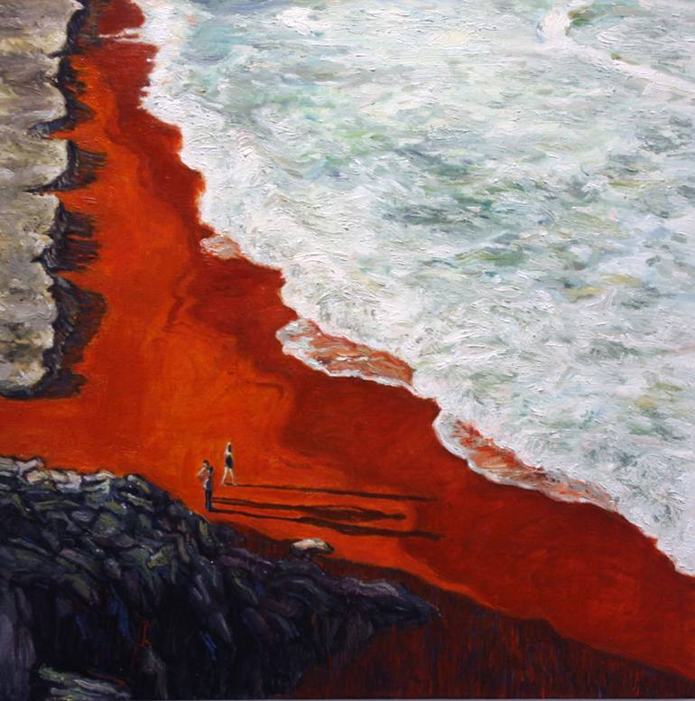<h1>The Sands of Scarlet</h1><br><p>Extending from the Cove of Crimson to Ruby Bay, the Sands of Scarlet is the shoreline and the three small islands that make up a majority of the coast of Taldiria. The shoreline gets its name from the red tint of the sand due to high iron content from the dissolusion and disarmament of the Colli Agreement.</p>");
    
var ex_2 = L.marker([-49.724479, -157.5], {icon: lnshore}).bindPopup("<h1>Collic Peninsula</h1><br><p>The only remaining land referencing the former name of Taldiria, The Colli Agreement. The Collic Peninsula is a series of 4 islands each smaller than the last. While the first three do not have any established settlements on them, the farthest out from shore is watched over by Starfall Tower.</p>");
    
var ex_3 = L.marker ([-33.431441,-152.490234], {icon: lnshore}).bindPopup('Whispering Shores');
var ex_4 = L.marker ([-50.903033,-139.746094], {icon: lnshore}).bindPopup('<h1>Cove of Crimson</h1><br><p>The inlet leading to Avey and its ports gets its namesake from one of the many historical sieges of Avey that took ended in disaster. These sieges often lead to blood-stained water and dead bodies washing ashore for weeks at a time.</p>');
    
var ex_5 = L.marker ([-65.07213,-115.224609], {icon: lnpass}).bindPopup("<h1>Baltaer's Triad</h1>");
    
var ex_6 = L.marker ([-64.960766,-111.005859], {icon: lnlake}).bindPopup("Baltaer's Spit");
var ex_7 = L.marker ([-66.443107,-121.113281], {icon: lnshore}).bindPopup('Ruby Bay');
    
var ex_8 = L.marker ([-55.178868,-107.050781], {icon: lnmountain}).bindPopup("<h1>Claws of Crystal</h1><br><p>Among the sand dunes, scattered, rests what is believed to be one of two of the only known remains of rumored crystal dragons in Enexia. These pointy 100 to 200 foot nigh-indestructible curved crystal structures are thought to be where these dragons met their fate.</p>");
    
var ex_9 = L.marker ([-48.458352,-100.898438], {icon: lndesert}).bindPopup("<h1>The Scorched Highlands</h1><br><p>A massive swath of sand forms the largest desert in Enexia. Little fauna and even less flora make this region nearly inhospitable except for the few cities that dot the desert, laying cloes to sparce water sources.</p>");
    
var ex_10 = L.marker ([-75.230667,-119.003906], {icon: lnshore}).bindPopup("Bridge of Cetius");
var ex_11  = L.marker ([-5.090944,-127.441406], {icon: lnshore}).bindPopup("<h1>The Untouched Shores</h1><br><p>A relatively unexplored body of water due to rough currents, incredibly high waves and a legnthy hisotry of ships gone missing.</p>");
var ex_12  = L.marker ([-15.114553,-118.125], {icon: lnshore}).bindPopup("Karamara Gulf");

var ex_13  = L.marker ([-50.958427,-133.59375], {icon: tlcapital}).bindPopup("<h1>Avey</h1><h2>Capital of Taldiria, 'Ruins of Red'</h2><br><strong>Population: ~12,000</strong><br><i>Main Exports: Fish, Weapons, Glass</i><br><p>Once the mighty seat of the Colli Agreement, Avey and its inhabitants have a troubled past during its long history. Hundreds of sieges before the formation of Taldiria have kept the populace from growing beyond the extensive outer-walls of the city, though in its newfound peace under Kriotcracy rule, a sweeping change has recently overtook long-standing rampant lawlessness. <br> Born anew, Avey still reigns as the captial of Taldiria, ushering in a new era of prosperity, cooperation, and growth.</p");

var ex_14  = L.marker ([-67.033163,-117.685547], {icon: tlcity}).bindPopup("Birbach");
var ex_15  = L.marker ([-66.722541,-113.730469], {icon: tltown}).bindPopup("Cerdon");
var ex_16  = L.marker ([-63.253412,-116.762695], {icon: tlvillage}).bindPopup("Haswadberg");
var ex_17  = L.marker ([-55.578345,-121.860352], {icon: tltown}).bindPopup("Ruthegs");
var ex_18  = L.marker ([-70.670881,-102.875977], {icon: tltown}).bindPopup("Marec");
var ex_19  = L.marker ([-68.895187,-96.28418], {icon: tlvillage}).bindPopup("Herte");
var ex_20  = L.marker ([-49.979488,-91.054688], {icon: tlcity}).bindPopup("Penticos");
var ex_21  = L.marker ([-55.72711,-154.335938], {icon: tlvillage}).bindPopup("Starfall Tower");
var ex_22  = L.marker ([-44.150681,-145.722656], {icon: ruin}).bindPopup("Quarlin");
var ex_23  = L.marker ([-36.738884,-142.734375], {icon: ruin}).bindPopup("Aern");
var ex_24  = L.marker ([-35.38905,-118.652344], {icon: ruin}).bindPopup("<h1>Kiljen</h1><br><p>On the edge of the untamed Wilds of Lerue and Volenia lies the ruins of Kiljen, a city long abandoned and shrouded in mystery. Once believed to be a thriving center of life and culture, Kiljen now stands as a shadow, its eerie silence broken only by the rustling of leaves and the distant calls of wild creatures.</br>The ruins are characterized by strange, domed architecture crafted from an inky blackstone, a material not native to the region. The closest natural deposits of this stone lie over two weeks’ journey to the south, within the Ekdraldian Nation of Cities. How such immense quantities of blackstone were transported and shaped into Kiljen's intricate structures remains a mystery that baffles scholars and adventurers alike.</br>Time and nature have reclaimed much of the city. Vines coil around the cracked walls, moss carpets the once-polished floors, and towering trees have pushed their way through forgotten courtyards. Yet, amidst the decay, Kiljen’s alien beauty endures, a reminder of a civilization whose story has been lost to the passage of time.</p>");
    
var ex_25  = L.marker ([-40.044438,-112.675781], {icon: ruin}).bindPopup("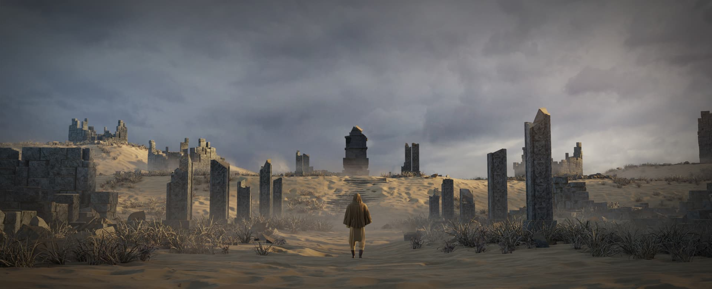<h1>Urexen</h1><p>Once a rather poor and small farming and gathering settlement along the outsides of the Wilds of Lerue, Urexen was laid to waste in Erra of 1150 P.D.E. when a single maddened monk attacked and slaughered most of the families that lived within. Urexen faced many hardships before this however, bordering the Wilds of Lerue was no easy task and often lead to many individuals parishing at the hands of animals that would tread south. </p>");
    
var ex_26  = L.marker ([-64.148952,-89.956055], {icon: ruin}).bindPopup("<h1>Sartena</h1><br><p>A small waypoint town once used for the Collic peoples to conduct regular raids on the neighboring Ekdraldian townships, notably Norester. In 1118 B.D.E., after a larger raid on Norester, Sartena was reduced to rubble as an Ekdraldian military operation was carried out, leading to a half a day long siege of magic and mental, killing most.</p>");
var ex_27  = L.marker ([-70.78691,-118.476563], {icon: ruin}).bindPopup("Falknir");	
		
		// Republic of Volenia
		
var ex_28  = L.marker ([-19.725342, -72.861328], {icon: vlvillage}).bindPopup("Triwood");
var ex_29  = L.marker ([-26.115986, -82.705078], {icon: vltown}).bindPopup("Nearle");
var ex_30  = L.marker ([-32.026706, -84.814453], {icon: vltown}).bindPopup("Reins");
var ex_31  = L.marker ([-41.310824, -76.552734], {icon: vlcity}).bindPopup("Britesen");
var ex_32 = L.marker ([-50.289339, -85.166016], {icon: vlvillage}).bindPopup("Carley");
var ex_33 = L.marker ([-47.901614, -66.09375], {icon: vlvillage}).bindPopup("Collita");
var ex_34 = L.marker ([-53.252069, -54.975586], {icon: vltown}).bindPopup("Southrend");
var ex_35 = L.marker ([-39.164141, -46.757813], {icon: vltown}).bindPopup("Tirias");
    
var ex_36 = L.marker ([-29.496988, -55.283203], {icon: vlcapital}).bindPopup("<h1>Altash</h1><h2>Capital of the Republic of Volenia</h2><br><strong>Population: ~18,000</strong><br><i>Main Exports: Ships, Slaves, Weapons & Armor</i><br><p>The heart of Volenia and the most militarized city in Enexia, Altash is a sprawling center of industry and power. It boasts the second largest port on the continent, a vital nexus of shipbuilding and trade that has fueled the city’s explosive growth in both population and area since its founding. <br><br>The city's layout is dominated by the Tricrossing, a large trisecting river and numerous smaller canals that split Altash into three main districts and five smaller ones. Each district thrives with the activity of docks, shipyards, and bustling marketplaces.<br><br>Rising above the city’s streets are three towering spires, each symbolizing a key pillar of Volenian society. One spire oversees the country's military operations, another is home to the arcane colleges where magic is studied and practiced, and the third houses the governmental offices from which the Triarchy rules.<br><br>Altash is a city where the rule of law is forged by its people's readiness for combat. Nearly every citizen is armed, and swift, often personal justice ensures the streets remain free of crime. This fierce martial spirit pervades every aspect of life in the city, where discipline and strength reign supreme under the watchful eye of the Triarchy.</p>");
    
var ex_37 = L.marker ([-32.879587, -44.472656], {icon: vlvillage}).bindPopup("<h1>Stormfury</h1><h2>Volenite Port on the Azurian Coast, Under the Local Triarchy of Altash</h2><br><strong>Population: ~3,000</strong><br><i>Main Exports: Ships, Slaves, Weapons & Armor</i><br><p>Named for the fierce winds that sweep into the bay, Stormfury is a city defined by its rigorous training programs and hardened seafarers. The primary training ground for the Volenite navy, it hosts the renowned Reicroft Naval Academy, the most prestigious institution of naval military studies in all of Enexia. Known for producing fearless captains, tactical geniuses, and disciplined crews, Stormfury shapes Volenia’s navy with a legacy of unyielding dedication and skill to the Triarchy.</p>");
    
var ex_38 = L.marker ([-34.741612, -37.397461], {icon: vlcity}).bindPopup("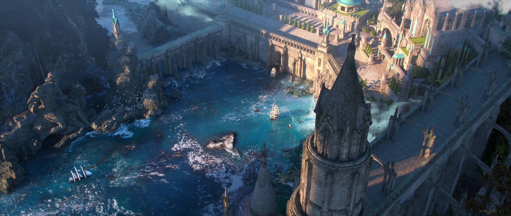<h1>Draveport</h1><h2>Volenian Military & Fishing Harbor</h2><br><strong>Population: ~6,000</strong><br><i>Main Exports: Ships, Wheat, Timber</i><br><p>Named after the esteemed former Grand Protector, Eliva Drave, Draveport stands as the administrative center for the Eastern Azurian Coast. The Triarchy of Draveport governs not only the city but also the nearby townships of Shallowfen and Deepcrest. Once the seat of Volenia’s central Triarchy before it was moved to Altash, Draveport retains an aura of grandeur and strategic importance, with towering castle walls that reflect its storied past.</p>");
    
var ex_39 = L.marker ([-31.914868, -25.488281], {icon: vltown}).bindPopup("<h1>Shallowfen</h1><h2>Volenite Port on the Azurian Coast, Under the Local Triarchy of Draveport</h2><br><strong>Population: ~1,500</strong><br><i>Main Exports: Reed Goods, Fish, Limestone</i><br><p>Nestled among the misty wetlands along the Coast, Shallowfen is a close-knit port city known for its resilient people and unique relationship with the land. <br><br>The smallest of the Azurian Coast ports by both population and land area, Shallowfen thrives on the bounty of its surroundings, relying on fishing, stone mining, and goods crafted from the reeds and resources of the wet meadows that surround it. </p>");

var ex_40 = L.marker ([-39.571822, -19.863281], {icon: vlcity}).bindPopup("<h1>Deepcrest</h1><h2>Volenite Port on the Azurian Coast, Under the Local Triarchy of Draveport</h2><br><strong>Population: ~3,000</strong><br><i>Main Exports: Furs, Spices, Textiles</i><br><p>Deepcrest, positioned as the easternmost port of Volenia along the Azurian Coast, is a bustling gateway between the elvish lands of Mendon and Volenia. Though small in resident population, the town teems with activity, serving as a central trade hub for travelers, merchants, and sailors passing between the two nations. Deepcrest is known for its mix of cultures, making it a melting pot of customs, languages, and goods that you’ll rarely find elsewhere in Volenia.</p>");

var ex_41 = L.marker ([-50.092393, -46.582031], {icon: vlvillage}).bindPopup("Kapelo");
var ex_42 = L.marker ([-42.423457, -89.780273], {icon: lnmountain}).bindPopup("<h1>The Northern Spears</h1><br><p>A formidable mountain range dividing the lush western Volenian plains from the harsh, arid Scorched Highlands of Taldiria, the Northern Spears have long served as a natural barrier against the once Colli Agreement raiders. Their jagged peaks and treacherous passes make them a key defensive feature for Volenia, standing resolute against any invasion from the West. </br>The mountains are not only a line of defense but also a home to thriving communities. Deep within their caverns and valleys live numerous dwarven clans, renowned for their mining expertise and craftsmanship. These dwarves produce some of the finest weapons, armor, and jewels in Enexia, trading their wares with both Volenia and Taldiria. </br>Among the towering peaks resides one of the continent's largest Goliath clans, the Thunder Pack. Members of the Pack often descend the sheer cliffs to hunt in the Wilds of Lerue, which few other groups dare to attempt. These excursions not only sustain their people but also serve as rites of passage for young Goliaths seeking to prove their worth.</p>");
    
var ex_43 = L.marker ([-6.620957, -81.650391], {icon: lnpass}).bindPopup("<h1>Winchester's Pass</h1><br><p>A narrow strait, separating the Olvostien Isles from the mainland of Enexia. It marks the final resting place of the legendary Volenian warship, Her, captained by the renowned Admiral Winchester Olvostien. The ship and its crew of 120 met their end here in a fierce, five-hour battle against a monstrous Kraken, cementing Olvostien’s legacy as the most decorated admiral in Volenia’s history.</p>");
    
var ex_44 = L.marker ([-2.460181, -83.452148], {icon: lnshore}).bindPopup("<h1>Olvostien Isles</h1><br><p>Named after their discoverer, Fredrick Olvostien, the Olvostien Isles are a scattered chain of islands off the coast of Enexia. The isles are home to a dormant volcano and are known to house scattered populations of Kuo-toa.</p>");
    
var ex_45 = L.marker ([-25.878994, -55.678711], {icon: lnlake}).bindPopup("<h1>Argal's Reef</h1><br><p>A sprawling inlet adorned with vibrant coral serves as Altash, Volenia's capital city's, primary port. Beneath its sparkling waters lie the remnants of a long-lost Sea Elf civilization, where coral now clings to the ruins of what was once a vast, underwater metropolis. This blend of ancient ruins and marine life makes it one of Enexia’s most diverse and mystifying underwater landscapes.</p>");

var ex_46 = L.marker ([-32.62087, -41.748047], {icon: lnlake}).bindPopup("<h1>Bay of Verela</h1><br><p>The Bay of Verela, a deep natural harbor, grants access to the shipyards of Stormfury and Draveport. These bustling ports are the heart of Volenia’s shipbuilding industry and serve as the primary training waters for the formidable Volenian Navy, where seasoned sailors and fresh recruits alike hone their maritime skills.</p>");
    
var ex_47 = L.marker ([-12.46876, -49.086914], {icon: lnshore}).bindPopup("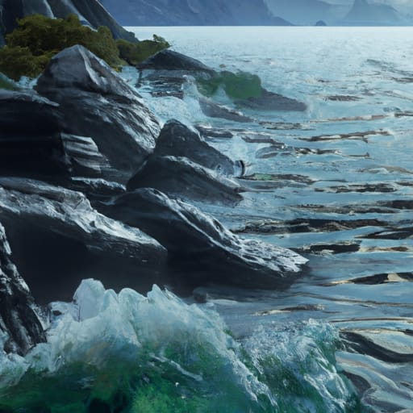<h1>The Azurian Coast</h1><br><p>The sweeping northern coastline of Volenia marks the continent's second longest shoreline, bustling with life and trade. It boasts Enexia’s most densely settled coastal region, home to six major townships and a multitude of smaller settlements, each dedicated to industries like fishing, shipbuilding, and lumber milling.<br><br>The thriving coast supports nearly a quarter of the continent’s naval trade, acting as a crucial artery for goods flowing to and from Enexia's ports.</p>");
    
var ex_48 = L.marker ([-52.241256, -46.186523], {icon: lnlake}).bindPopup("<h1>Larenville Lake</h1><br><p>Known locally as Kagth'damo, “The Nine” in the tongue of the goblins who inhabit its shores, Larenville Lake is a striking landmark. Its waters are stained a permanent crimson, fueling countless tales and speculations across Enexia. </br>The native goblin theory suggests the presence of an open portal to the Nine Hells hidden within the lake’s depths, spilling infernal magic into its waters. Yet, despite numerous expeditions by scholars, mages, and adventurers, no evidence of such a portal has been found. The lake’s red hue remains a mystery, defying all attempts at explanation.</p>");
    
var ex_49 = L.marker ([-51.261915, -68.686523], {icon: lnpass}).bindPopup("<h1>Flat of Dakul</h1><br><p>Stretching across the southern reaches of Volenia, the Flat of Dakul is a vast plateau that extends to the border of the Ekdraldian Nation of Cities. This unique geological feature is not only a defining element of the region’s landscape but also a mysterious influence on its climate. </br>Weather patterns in the Flat of Dakul are notably distinct from those of the surrounding Revach Plains. The plateau seems to draw in greater rainfall and frequent windstorms, creating an environment of fertile, wind-swept fields. This anomaly has made the Flat of Dakul a hub for agriculture, attracting both large farming companies and independent farmers who thrive in the nutrient-rich soil. </br>The plateau is home to sprawling estates, quaint farming villages, and bustling markets where crops are exchanged and shipped across Volenia.</p>");
    
var ex_50 = L.marker ([-30.524413, -66.533203], {icon: lnmountain}).bindPopup("<h1>Altashi Lifts</h1><br><p>The rolling hills encircling Altash’s capital are scarred with remnants of past conflict's experimentation. Rusting siege engines, scorched craters, and fragments of experimental weaponry and magic. These silent witnesses tell the story of relentless testing during the Volenian Revolution, the War of Darkness and the era that followed. </p>");
    
var ex_51 = L.marker ([-44.995883, -34.277344], {icon: vlvillage}).bindPopup("Bury");
var ex_52  = L.marker ([-38.891033, -65.742188], {icon: ruin}).bindPopup("Halinfor") ;		
		
		// Ekdrald NOC
		
	var ex_54  = L.marker ([-67.575717, -88.681641],{icon: ektown}).bindPopup("<h1>Norester</h1><h2>Ekdraldian Mining Town along the Western Knives Under Local Magocracy of Westera</h2><br><strong>Population: ~8,000</strong><br><br><i>Main Exports: Stone, Marble, Coal</i><br><p>Norester was once a defensive city built for one purpose, to protect the border from Collic raiders. After the Colli Agreement has disbanded, turned into Taldiria, and the raiders from the Scorched Highlands are not an issue, the town struggled to transform from a large military residence to an normal establishment. Shortly after the War of Darkness, Norester discovered massive caves containing coal in the Knives, and turned their economy around from falling exponentially, to a booming mining facility.</p>");
	
var ex_55  = L.marker ([-72.127936, -92.109375],{icon: ekvillage}).bindPopup("<h1>Fangwatch</h1><h2>Ekdraldian Border Town, Under the Local Magocracy of Westera</h2><br><strong>Population: ~2,500 & Rising Slowly</strong><br><i>Main Exports: Trade Goods, Weapons, Lumber</i><br><p>Fangwatch is a town of contrasts, where the past and the present coexist. It is a symbol of the changing relationship between Taldiria and the Ekdrald, and a testament to the power of diplomacy. With the establishment of the Taldiria as a sovereign nation and the signing of a peace treaty, the growth of the walls of Fangwatch ceased after decades of expansion.");
	
var ex_56  = L.marker ([-73.627789, -90.703125],{icon: ektown}).bindPopup("<h1>Lancaster</h1><h2>Ekdraldian Port City on the Southern Border of Seretra's Grace, Under the Local Magocracy of Westera</h2><br><strong>Population: ~2,000 & Rising Slowly</strong><i>Main Exports: Ships & Fish</i><br><p>As a major shipbuilding center, Lancaster is a key hub for the Ekdraldian navy, and its harbor is often filled with the hulls of warships under construction or being repaired. The city is also a popular embarkation point for naval expeditions, with many sailors and marines passing through Lancaster on their way to far-off lands.</p>");
	
var ex_57  = L.marker ([-72.342464, -82.353516],{icon: ekvillage}).bindPopup("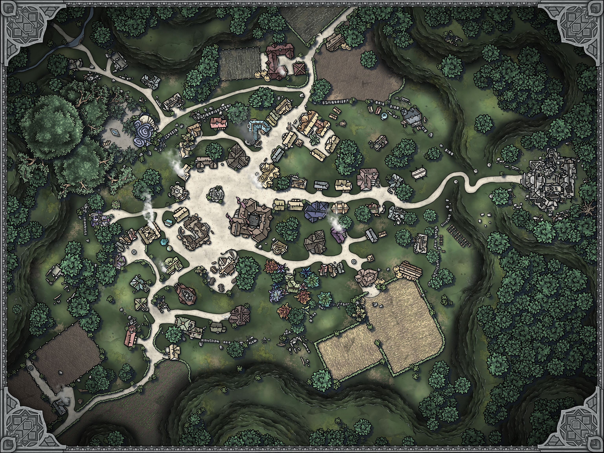<h1>Pines Peak</h1><h2>Ekdraldian Lumber Hamlet in Seretra's Grace, Under the Local Magocracy of Westera</h2><p>Pine's Peak, named after the pine trees of the Grace that surround it, provide the perfect environment for the town's main industry - lumber. The residents of Pine's Peak are skilled lumberjacks, who fell the trees and carefully craft the logs into beautiful pieces of furniture and other objects. Their craftsmanship is widely sought after and can be seen in palaces, banks, and noble's homes across the continent. In addition to lumber, Pine's Peak also exports a variety of alchemy ingredients. The Grace is teeming with rare herbs and plants, which the residents carefully collect and then sell to alchemists and adventurers alike.</p>");
	
var ex_58  = L.marker ([-69.778952, -79.628906],{icon: ekcity}).bindPopup("<h1>Westera<h1><h2>Ekdraldian Trade City in Seretra's Grace, Under the Local Magocracy of Westera</h2><strong>Population: ~5,500 & Rising Slowly</strong><em>Main Exports: Lumber, Magical Weapons & Armor</em><br><p>Known for its exports of lumber, magical weapons and magical armor, Westera's skilled craftsmen are able to imbue their creations with powerful spells, making them highly sought after by warriors and adventurers throughout Enexia. These enchantments are aided by the College of Abjuration, located in the heart of Westera. The College is a sprawling complex of buildings, filled with libraries, classrooms, laboratories, and dormitories. The college also serves as the primary magical defense force for the city of Westera. The College's mages are trained to defend the city from magical threats, and they work closely with the city's military and political leaders to ensure the safety and security of the city and its people.</p>");
	
var ex_59  = L.marker ([-64.997939, -76.201172],{icon: ektown}).bindPopup("<h1>Frosthelm</h1><h2>Ekdraldian (Dwarvish) Mining Town along the Western Knives</h2><br><strong>Population: ~2,000</strong><br><br><i>Main Exports: Gems, Stone, Precious Minerals</i><br><p>Originally starting as a dwarvish settlement outside the Western Knives for food and wood, Frosthelm has transitioned into an Ekdraldian town in all but government. The city is still ruled over by a Dwarvish council since its founding. Frosthelm's streets are cobbled and well-maintained, and its buildings are sturdy and well-constructed, with thick stone walls and heavy wooden doors. The dwarf's love of art and beauty is also abundant in the city, with ornate carvings and sculptures decorating many of the buildings, and the city's central square is home to a beautiful fountain, depicting a group of dwarves collaborating to forge a single sword.</p>");
	
var ex_60  = L.marker ([-63.43086, -72.597656],{icon: ekvillage}).bindPopup("<h1>Elsewhere</h1><h2>Ekdraldian Military Village Under Local Magocracy of Ashfall</h2><br><strong>Population: ~500</strong><br><p>A city named for its massive portal that leads to most other planes of exisence is guarded over by a garrison of the Ekdraldian Military members. While the city does have all the amenities of a normal town; tavern, blacksmith, temple, cobbler, fletcher, etc. the city itself is nearly impossible to get into without explicit authorization from a National Magocracy official.</p>");
	
var ex_61  = L.marker ([-62.103883, -60.996094],{icon: ekvillage}).bindPopup("<h1>Strongheart</h1><h2>Ekdraldian Mining Town along the Western Knives, Under the Local Magocracy of Easthaven</h2><br><strong>Population: ~1,000 & Steady</strong><br><i>Main Exports: Gems, Stone, Ingots</i><br><p>Situated in rolling plains, surrounded by fields of crops and pastures of livestock, Strongheart, despite its rural location, is a thriving hub of commerce and industry, known for its rich deposits of gemstones and jewels that are mined from the nearby mountains. The town itself is a mix of old and new, with traditional, low-slung buildings made of brick and stone, and more modern structures of steel and glass. The streets are bustling with activity, as workers, merchants, and travelers go about their business. The air is thick with the smell of smoke and the sound of machinery, as the town's many factories and mills work tirelessly to extract and process the mined goods.</p>");
	
var ex_62  = L.marker ([-70.466207, -72.597656],{icon: ekcity}).bindPopup("<h1>Strixhaven</h1><br><p>The entrance to Strixhaven, University of the Arcane, which lies within its own demiplane of the same name, that trains all ages and races. The school began construction in 1120 P.D.E. and completed construction in 1143 P.D.E. on Junlo 1, known as Advancement Day. The University has five different schools, all ranging from mundane magical to arch-colleges for specailized foci. Each semester on the plane is 15 weeks, with a year consisting of two semesters, however the time differential between the Prime Material and the plane is that one year within Strixhaven is equal to half a year on the Prime.</p>");
	
var ex_63  = L.marker ([-73.099413, -63.632813],{icon: ekcapital}).bindPopup("<h1>Whitebridge</h1><h2>Capital of the Ekdraldian Nation of Cities</h2><br><strong>Population: ~12,000</strong><br><i>Main Exports: Trade Goods & Magical Items</i><br><p>The mighty seat of the National Magocracy of the Ekdrald, Whitebridge was founded on humble beginnings that soon turned into grandiose plans. Originally founded as  a trade town between Waterhollow and Westera, Whitebridge, first called Trottendam, was meant to be what Easthaven has morphed into, a respite for adventurers, merchants, and travelers alike. Since its founding, Whitebridge transformed from the small trading town it was thought to be, to not only the epicenter of Magocracy business, but the house for Federation meetings and courts. Split into nine different districts, vast marble and granite buildings intertwine with obsidian mined from the Black Plains to create spectacular sights all throughout the expansive capital.</p>");
	
var ex_64  = L.marker ([-74.283563, -66.621094],{icon: ekvillage}).bindPopup("<h1>Cliffport</h1><h2>Ekdraldian Port Under Local Magocracy of Whitebridge</h2><br><strong>Population: ~4,500</strong><br><i>Main Exports: Ships & Foodstuffs</i><br><p>Sitting underneath the lowest point along the Bight of Drlex, Cliffport was established shortly after the foundation of Whitebridge to provide access to the southern Oceanic Expanse for both trade and food. Because of where the city rests below the bight, darkness looms until midday causing working hours for most businesses to open around noon and last until late into the night. The town is divded into two districts the Lower Ports and the Upper Ward.</p>");
	
var ex_65  = L.marker ([-75.497157, -61.259766],{icon: ektown}).bindPopup("<h1>Mistfall</h1><h2>Ekraldian Port Under Local Magocracy of Whitebridge</h2><br><strong>Population: ~1,500</strong><br><i>Main Exports: Foodstuffs & Coal</i><br><p>Seen as the younger sister to Cliffport, Mistfall generally exports the same foodstuffs and has recently opened a glass forge as well. Though Mistfall was originally established as a mining town to explore a small opening in the Bight of Drelx that lead to an expansive coal mine. Since its foundation, Mistfall has been the second leading exporter of coal to Ekdraldian cities and the fourth largest in the federation overall. Because of its establishment as a small mining town, most of the residents are intertwined socially as they have known each other from generation to generation. The residents of Mistfall are some of the most welcoming, respectful, and proud people in the country, extending every hospitality as if they were halflings. The village is not large enough to have defined districts, though many of the residents see the four docks and its offices as a ward and the rest of the residential area, including a single tavern, mining shop, and small stable as the residental ward.</p>");
	
var ex_66  = L.marker ([-70.988349, -53.4375],{icon: ekcity}).bindPopup("<h1>Easthaven</h1><h2>Ekdraldian Trade City & Local Magocracy Capital</h2><br><strong>Population: ~9,000</strong><br><i>Main Exports: Precious Metals, Magical Items, Black Plains Obsidian</i><br><p>The only legal city to buy and sell the obsidian mined in the Black Plains, Easthaven is the home of trade between Whitebridge and Waterhollow. Materials processed and un-processed flow between hands as quickly as coin in this smaller city. Adventurers can be seen in almost every storefront with large blades and powerful wands attached to their side.</p>");
	
var ex_67  = L.marker ([-65.622023, -52.119141],{icon: ekvillage}).bindPopup("<h1>Ashfall</h1><h2>Ekdraldian Mining & Prison City Under Local Magocracy of Easthaven</h2><br><strong>Population: ~1,500</strong><br><i>Main Exports: Black Plains Obsidian, Lumber</i><br><p>Nestled in the midst of the treacherous Black Plains, Ashfall serves as a prison city, where convicts are forced to mine the valuable obsidian from the blackened. The village itself is surrounded by high walls, with only two entrances guarded by Magocracy guards. Inside, the streets are narrow and winding, with ramshackle buildings made of wood and stone. The air is thick with the smell of smoke and ash from the mines, and the constant sound of pickaxes echoes through the village. The only exception to this is the College of Necromancy that hosts the smallest student population of the colleges in the Ekdrald. <br>The prisoners, who are mostly sentenced to death, are forced to work long hours on the surface and in the mines, where they face dangerous conditions. The obsidian they extract is prized for its sharp edges and durable nature, and is used for weapons and tools throughout the Magocracy. Despite the harsh conditions, the people of Ashfall have found a way to make a life for themselves. The village has a small market, where the prisoners can trade their meager earnings for food and supplies.</p>");
	
var ex_68  = L.marker ([-56.474628, -52.734375],{icon: ekcity}).bindPopup("<h1>Rymouth</h1><h2>Ekdraldian Trade Town Under Local Magocracy of Easthaven</h2><br><strong>Population: ~3,500</strong><br><i>Main Exports: Trade Goods, Lumber, Wheat</i><br><p>The border city of Rymouth was established when the Ekdraldian Nation of Cities ruled the entire central area of Enexia. Though here has always been contention within and around the city due to its location, esecially when Volenia rebelled. The Volenians allowed the Ekdrald to keep Rymouth, transforming it form a large fortress into a free trading city between the two states. </p>");
	
var ex_69  = L.marker ([-66.548263, -40.957031],{icon: ektown}).bindPopup("<h1>Lomire</h1><h2>Ekdraldian Mining Trade Center Under the Local Magocracy of Waterhollow</h2><br><strong>Population: ~2,400</strong><br><i>Main Exports: Precious Gems & Building Materials</i><br><p>In the Magocracy everything must have a purpose, and for Lomire, a town that was established by 6 families living on a farm, did not quite have a purpose up until 1112 A.E. Still exploding from its humble beginnings as 16 people to its population of over 2,000, Lomire not only has established itself as a large mining trade hub but also an adventurers respite on their way to the northern section of the country. Small stone walls shield the town's two main districts.</p>");
	
var ex_70  = L.marker ([-66.053716, -34.189453],{icon: ektown}).bindPopup("<h1>Clewich</h1><h2>Ekdraldian Mining Encampment Under the Local Magocracy of Waterhollow</h2><br><strong>Population: ~1,200</strong><br><i>Main Exports: Precious Gems & Building Materials</i><br><p>The smallest established township both by size and population is actually one of the most important mining hamlets in the country. Everything from precious gems to building stone is exported from this tiny wooden walled hamlet. The town houses one tavern, two small inns for the seasonal miners, a small trade shop, and around two tons of mining equipment. Over the years Clewich has grown from a small tent that held 3 families, into one of the largest producers of stone used for building palaces and gems to adorn the crowns of rulers across the land. Those who work here often do for most of their lives, giving this hamlet a nice familiy feel, next to the rampant drug use, obvious social divide, and astoundingly rank smell.</p>");
	
var ex_71  = L.marker ([-74.164085, -47.197266],{icon: ekcity}).bindPopup("<h1>Waterhollow</h1><h2>Ekdraldian Trade Port & Local Magocracy Capital</h2><br><strong>Population: ~21,000</strong><br><i>Main Exports: Fish, Alcohol, Magical Items</i><br><p>Many from around the planes come to Waterhollow to enjoy in the 'Port of Pleasure' and the many different activities it has to offer. The largest port city on the prime material since the ancient era. Waterhollow rests at one of the lowest points on the Bight of Drelx with its many domed buildings emerging over the massive drop into the cities many docks. Often seen as the epicenter of nearly all naval trade in the Ekdraldian Nation of Cities, the city is protected by a guard force larger than a division of Volenian soldiers. Shipbuilding ports, world-renowned magical shops, breweries, taverns, and so much more lay tucked away within its packed alleyways.</p>");
	
var ex_72  = L.marker ([-70.377854, -34.101563],{icon: ekvillage}).bindPopup("<h1>Highbury Citadel</h1><h2>Free City on the Border of the Ekdrald & Climalis</h2><br><strong>Population: ~500</strong><br><i>Main Exports: Warforged (A.E.) & Firearms (P.D.E)</i><br><p>Home of the semi-natural semi-metal humanoids, the Warforged were created here in Junar of 1130 P.D.E. following the War of Darkness. Even though Highbury Citadel considers themselves a city free from any government, nearly all 1,000 Warforged produced went directly to the local and national Magocracies of the Ekdrald. Warforged production has since ceased due to high cost and instead the Citadel has been contracted by the Ekdraldian Nation of Cities for the productions of a new and emerging technology of firearms. In the years before the Divine Expansion, Highbury Citadel was the training ground of two small groups, anti-magic warriors known as the Witchslayers and the highly trained bodyguards of Magocracy officials known as the Mage Guards. Though this practice is still around today, it has been exported to Whitebridge, Highbury Citadel's protective walls have stood as a testament to the warrior class and the everchanging tides of magic and innovation.</p>");
	
var ex_73  = L.marker ([-68.640555, -65.478516], {icon: lnmountain}).bindPopup("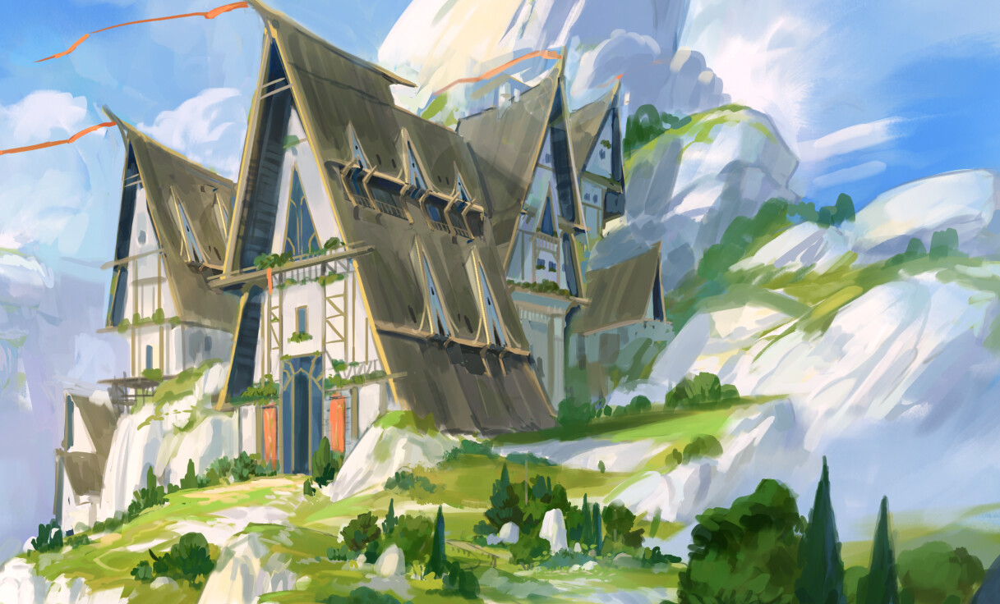<h1>The Winding Mountains</h1><br><p>Over centuries of adventurers scaling the lonely mountain range in the middle of the Ekdraldian Grand Forest, the footpaths taken to traverse the mountain have become increasingly complicated to follow, hence the name of these tall structures. The highest point along the small range sits at around 4,500 feet above the forest and is a commonly used prayer ground for those who have encountered tough times. Just below the peak sits a lonely inn known as Dyril Hylar. This small two story building acts as a brief pause and typically a moment of quiet before ascending to the windy peak. The inn does serve food and drink, though the patrons here and the family of dwarves, the Emberashes, who run it have a mutual understanding that many who make the journey to the top of the Winding Mountains, have much to consider before they pray.</p>");
	
var ex_74  = L.marker ([-68.528235, -82.705078], {icon: lnforest}).bindPopup("<h1>Seretra's Grace</h1><br><p>Seretra's Grace is a peaceful and idyllic place, where one can find solace and tranquility amidst the hustle and bustle of the outside world. The forest is considered to be a gift from Seretra herself, and it is protected and cared for by a dedicated group of rangers and druids who live in the forest and ensure its health and well-being. Known for its towering pine trees, which stretch high into the sky, 'the Grace' is home to a wide variety of wild animals, including deer, foxes, rabbits, and birds of all shapes and sizes. The air is filled with the sounds of chirping birds and rustling leaves, and the ground is covered in a carpet of soft moss and fragrant flowers.</p>");
	
var ex_75  = L.marker ([-70.229744, -44.780273], {icon: lnforest}).bindPopup("<h1>The Bellimore Thicket</h1><br><p>On the western side of Myr road that runs from Whitebridge to Ashfall, the area of forest that survived the Great Eruption's massive spewing of lava, known as the Bellimore Thicket stands as a testament to what the entirety of the Ekdraldian east used to be before the eruption. The wood has had much more growth than the rest of the Ekdraldian Grand Forest due to temperatures and rainfall amounts. Because of this the thicket can be very difficult to traverse at points and will often leave individuals or entire parties feeling lost as the thousands of trees begin to blend together after spending even an hour within the woods.</p>");
	
var ex_76  = L.marker ([-62.674143, -48.779297], {icon: lndesert}).bindPopup("<h1>The Black Plains</h1><br><p>Created by the Great Explosion of Hell's Throat, the Black Plains is a massive, nearly 10 feet thick region of obsidian when the lava from the eruption cooled. Known for its magical properties of being near-indestructible, whereas regular obsidian typically splinters. The plains are chipped away endlessly by those sentenced to death by the Magocracy of the Ekdrald, with unbearable temperatures during Starspark and Starfall. The obsidian mined here is one of the most expensive materials on the prime due to its magical properties and the amount of effort it takes to collect it.</p>");
	
var ex_77  = L.marker ([-71.244356, -60.820313], {icon: lnforest}).bindPopup("<h1>The Wreathing Woods</h1><br><p>These twisted trees have seen ages of growth, reaching so close to each other some of the tree's limbs intertwine with other branches to make a nearly endless canopy. Extending from the base of the Winding Mountains to Whitebridge, the woods was once a fantastic hunting grounds said to be one of the reasons Whitebridge grew in popularity since its foundation. Though not as large as the Bellimore Thicket due to the nearby mountain, the woods are extremely expansive and can be daunting to traverse should the road disappear from view.</p>");
	
var ex_78  = L.marker ([-68.122482, -24.873047],{icon: ektown}).bindPopup("<h1>Baylet</h1><h2>Ekdraldian Port Under Local Magocracyy of Waterhollow</h2><br><strong>Population: ~7,00</strong><br><i>Main Exports: Foodstuffs & Alcohol</i><br><p>After the creation of the Bay of Cera by godly means, there was an immediate need for food and building materials in the southern country of Climalis in order for them to rebuild not only their capital city, but also their society. Thus Baylet was established to provide the Climalians with much needed resources. Over the years the town has expanded into a full port and a massive trading hub to the east portion of the continent. The town is divided into quarters, each with their own purpose.</p>");
    
var ex_79  = L.marker ([-75.174549, -53.349609], {icon: lnshore}).bindPopup("<h1>Bight of Drelx</h1><br><p>A stunning drop of more than 350 feet, the Bight of Drelx extends just west from Waterhollow all the way to the west of Cliffport. The bight sits around 50 feet at its lowest point where Cliffport was settled underneath its shadow. Many old temples and cities from the First Grand Creation Primordial dot the bight, though most notably the Tasyndradaes'm Syrdaes. Known as the Cartographer's Tower in common, the soon-to-be High Archmage Drelx compiled his maps of the continent within the confines of the massive stone tower. Many adventurers looking to find new land to settle came to the tower to study Drelx's maps when he was still alive. Though the tower has been preserved, all of Drelx's notes and maps have since been removed.</p>");
    
var ex_80  = L.marker ([-71.441171, -31.992188], {icon: lnmountain}).bindPopup("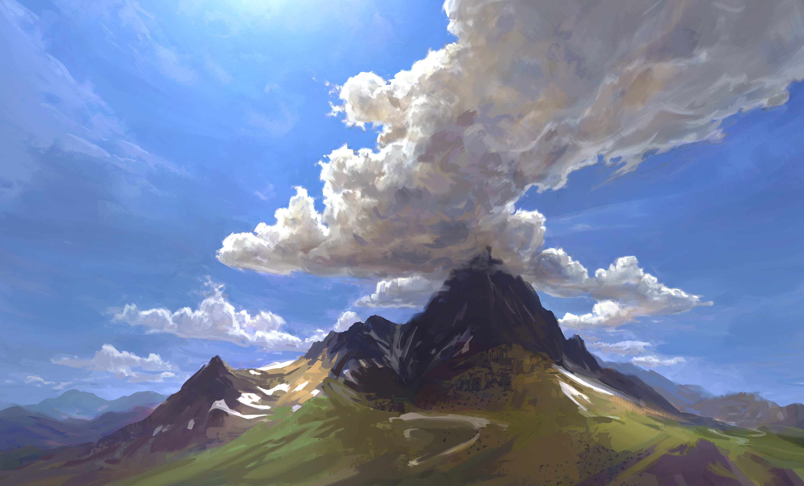<h1>Aldiria's Backbone</h1><br><p>Named after the Ekdraldian High Archmage Aldiria Taldir by the population of Climalis, Aldiria's Backbone is a lonely mountain range that divides the two countries. The three peaks of the range tower at around 1,400 feet above sea level and are said to represent the three countries of the former Central Federation, Volenia, Climalis, and the Ekdraldian Nation of Cities.</p>");
		
		// Climalis

var ex_81  = L.marker ([-71.883578, -10.283203], {icon: lnlake}).bindPopup("<h1>Bay of Cera</h1><br><p>In the days before most recorded history, the Bay of Cera was an expansive plain of rolling hills and wheat farming. However, two deities clashed above the plain and its one village, causing an unnatural explosion that leveled most of the plain, creating the Bay of Cera. </p>");
    
var ex_82 = L.marker ([-73.073844, -27.246094], {icon: cltown}).bindPopup("Erevillin");
var ex_83 = L.marker ([-75.275413, -31.640625], {icon: cltown}).bindPopup("Enylas");
var ex_84 = L.marker ([-76.780655, -19.6875], {icon: clvillage}).bindPopup("Arenlas");
var ex_85 = L.marker ([-75.027664, -10.986328], {icon: clcapital}).bindPopup("Cera");
var ex_86 = L.marker ([-76.372619, 3.515625], {icon: cltown}).bindPopup("Labrino");
var ex_87 = L.marker ([-75.497157, 10.019531], {icon: clvillage}).bindPopup("Cicalli");
var ex_88 = L.marker ([-73.677264, 10.986328], {icon: clvillage}).bindPopup("Malter");
var ex_89 = L.marker ([-73.302624, 18.632813], {icon: cltown}).bindPopup("Ven'alian");
var ex_90 = L.marker ([-71.300793, 31.113281], {icon: lnlake}).bindPopup("Sea of Veyris");
    
var ex_91 = L.marker ([-73.751205, 49.21875], {icon: lnshore}).bindPopup("<h1>Silne's Arm</h1><br><p>A long island chain comprised of 4 major and many minor islands that shields the Sea of Veyris on its southern side. Named after Silne, the forgotten deity of Love, the chains smaller islands tend to appear and disappear depending on the height of the waves.</p>");
    
var ex_92 = L.marker ([-77.322168, -4.833984], {icon: ruin}).bindPopup("<h1>Venzor</h1><br><p>The lost city of Venzor has been replaced with a thick bramble of twisting and contorting roots of a tree that stands at ~400 feet tall where the center of the village used to be.</p>");			
		
		// Mendon
    
var ex_93 = L.marker ([-48.922499, -17.138672], {icon: lnforest}).bindPopup("<h1>Regent's March</h1><p>An expansive boreal forest that spans the northern peninsula of Mendon. Often filled with snow in the colder months, the many types of flora and fauna here are suited to more colder climates</p>") ;
    
var ex_94 = L.marker ([-57.088515, -31.728516], {icon: lnpass}).bindPopup("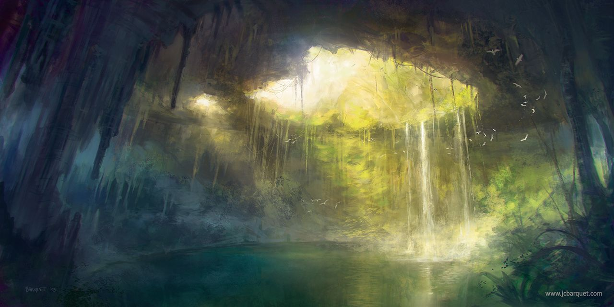<h1>Sinks of Anthamri</h1><p>An expansive area with intermittent cenotes, these underground bodies of water exposed to open air,can range anywhere from the size of a small rowboat to an expansive elvish mansion. Many Mendonese enjoy swimming in them during the warmer months and using the nature-made holes as shelter in the colder months.</p>") ;
    
var ex_95 = L.marker ([-65.109148, -13.798828], {icon: lnpass}).bindPopup("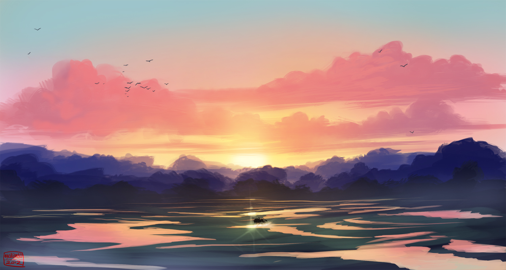<h1>Renlata Floodplains</h1><p>Before the Bay of Cera existed, the Renlata Floodplains used to be one massive river. Since the explosion and the creation of the bay, the water disruption caused the river to reroute. Over the years, the river instead of finding a new route, poured water onto the lands, creating a large floodplain that can easily become impassable in the rainy seasons.") ;
    
var ex_96 = L.marker ([-68.656555, 4.921875], {icon: lnforest}).bindPopup("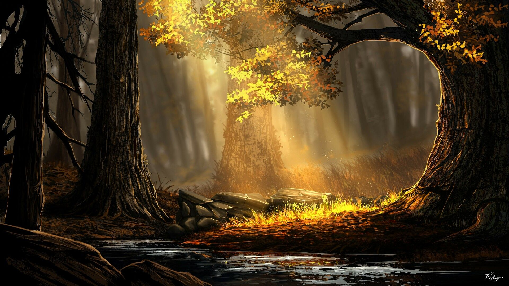<h1>Lightbearer's Woodlands</h1><p>Encapsulating all of the lower peninsula of Mendon, the Lightbearer's Woodlands is home to the 'Ereon Xik' or Gold Oak in the common tounge. These large oak trees, paint the day and night sky with leaves that shine gold. According to High Elvish history texts, Zynira bled over the forest causing the trees to shine as they do.</p>") ;
    
var ex_97 = L.marker ([-63.312683, -5.712891], {icon: lnmountain}).bindPopup("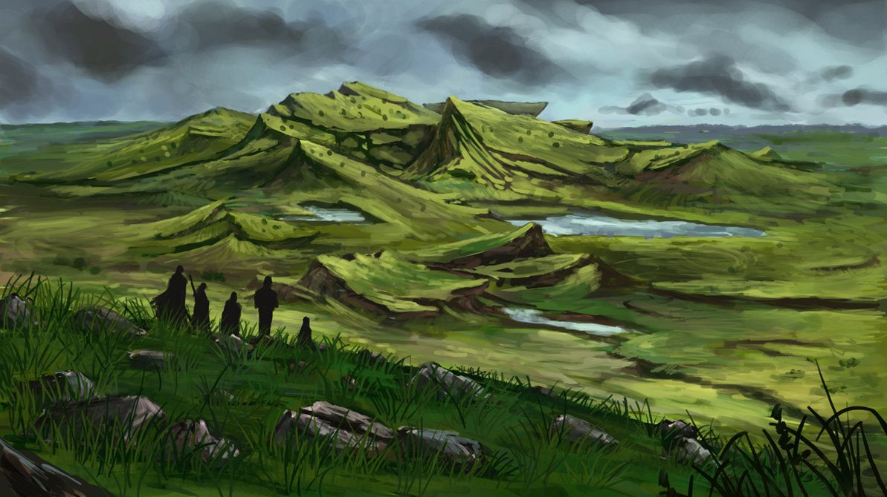<h1>Spine of Sivra</h1><p>Jutting out of the plains, the Spine of Sivra erupts from seemingly nothing. No hills lay around the second small mountain range, instead towering peaks ascend from 200 up to Lover's Point, at a towering 4,000 feet above sea level.</p>") ;
    
var ex_98 = L.marker ([-64.886265, 9.140625], {icon: lnmountain}).bindPopup("<h1>The Fangs of Ivory</h1><p>The Fangs of Ivory get their name from oddly large number of elephants that graze in this area, moving in their memories, the elephants are protected by many druids and rangers of the Emerald Enclave.</p>") ;
    
var ex_99 = L.marker ([-52.160455, -3.076172], {icon: lnshore}).bindPopup("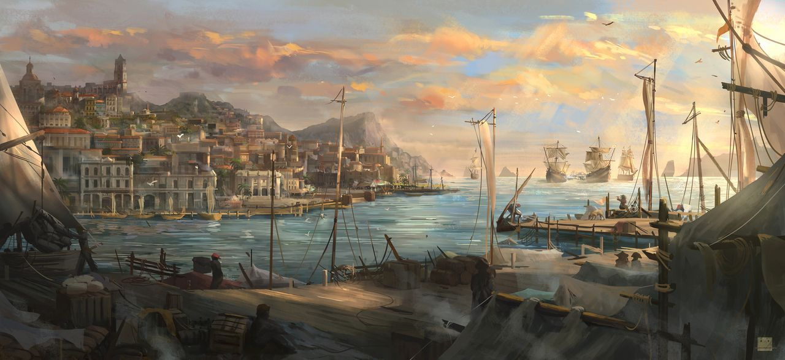<h1>Six Ports</h1><p>Seh'Dera or Six Ports in common, is a collection of six port cities mostly used for shipbuilding and fishing. The largest of the ports being Serinsera and Cerillanes, these two cities alone make up nearly 15% of Enexia's fishing trade.</p>") ;
    
var ex_100 = L.marker ([-49.267805, -30.937], {icon: mntown}).bindPopup("Lanore") ;
var ex_101 = L.marker ([-55.478853, -35.947266], {icon: mncity}).bindPopup("Illenyad") ;
var ex_102 = L.marker ([-64.168107, -24.169922], {icon: mnvillage}).bindPopup("Valforth") ;
var ex_103 = L.marker ([-59.756395, -24.169922], {icon: mntown}).bindPopup("Aysn Calor") ;
    
var ex_104 = L.marker ([-59.844815, -11.601563], {icon: mncapital}).bindPopup("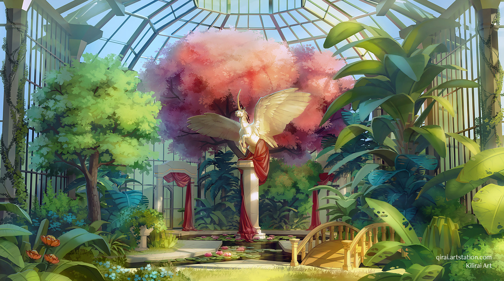<h1>Barley</h1><h2>Capital of Mendon & Seat of the Court of the Prime under the Parish of Barley</h2><br><strong>Population: ~15,000</strong><br><i>Main Exports: Marble, Magical Items, Wine</i><br><p>The largest city in Mendon also known as The Conjured Jewel, doubles as its capital city and the home to the noble family and their Court of the Prime. Its expansive sprawl is typical of that of a feywild city; Large marble structures, twisting and turning at their tops, inlaid with gold, silver, and sometimes gems. <strong>Mother's Garden</strong>, Seretra's main worshipping centre, illuminates the west side of the city with brilliant dances of light from a Polyhedra of Kullen.</p>") ;
    
var ex_105 = L.marker ([-68.592487, -11.865234], {icon: mntown}).bindPopup("<h1>Aysa Alora</h1><h2>Mendonian Port on the Bay of Cera, Under the Alora Parish</h2><br><strong>Population: ~2,500 & Rising Slowly</strong><br><em>Main Exports: Foodstuffs & Magical Items</em><br><p>Before its reversal in 1120 P.D.E., Aysa Alora used to hold the only legal magic shop south of the Mendonian capital city of Barley after the banning of the sale of magical items in 1101 B.D.E. due to a rising crime rate throughout Mendon. Adventurers and tourists alike travel from across the planes to marvel at the creations of master enchanters at Aeraes'm Kari (Ether's Gate). Though smaller in size compared to other ports in Seh'Dera, Aysa Alora has many destinations for every group of adventurers, explorers, tourists, and students.</p>") ;
    
var ex_106 = L.marker ([-66.407955, 1.40625], {icon: mncity}).bindPopup("Ayleth Alora") ;
    
var ex_107 = L.marker ([-72.919635, 6.064453], {icon: mnvillage}).bindPopup("<h1>Sethyr</h1><h2>'Port of Whispers' - Mendonian Port on the Bay of Cera, Under the Alora Parish</h2><br><strong>Population: ~1,000 & Steady</strong><br><em>Main Exports: Foodstuffs & Metals</em><br><p>A small port town along the Bay of Cera seems rather unassuming, though Sethyr as of recent has become popular due to the Caros Shoraes (Hall of Whispers), a bardic college that has had many influential and world reknown bards attend its small and modest corridors.</p>") ;
    
var ex_108 = L.marker ([-67.842416, 19.599609], {icon: mnvillage}).bindPopup("<h1>Halteron</h1><h2>Mendonian Fortress on the Bay of Cera, Under Council of Seasons of Aloria</h2><br><strong>Population: ~1500 & Rising Slowly</strong><br><em>Main Exports: Foodstuffs & Naval Vessels</em><br><p>Second largest in population of the port cities along the Bay of Cera in Mendon, Halteron was originally established as a fortress and fishing town before the creation of the Bay of Cera. Unaffected by the explosion that created the Bay, Halteron has remain near-unchanged for centuries as its massive shipyards and large export market of fish to other cities and countries. Its position along the edge of the bay establishes Halteron as a jumping-off point for many seafaring freebodies, naval endeavors, trade sailors, shipbuilders, and buyers.</p>") ;
    
var ex_109 = L.marker ([-53.592505, 1.933594], {icon: mncity}).bindPopup("Serinsera") ;
var ex_110 = L.marker ([-55.528631, -3.339844], {icon: mnvillage}).bindPopup("Yvatalos") ;
    
var ex_111 = L.marker ([-54.72462, -9.84375], {icon: mntown}).bindPopup("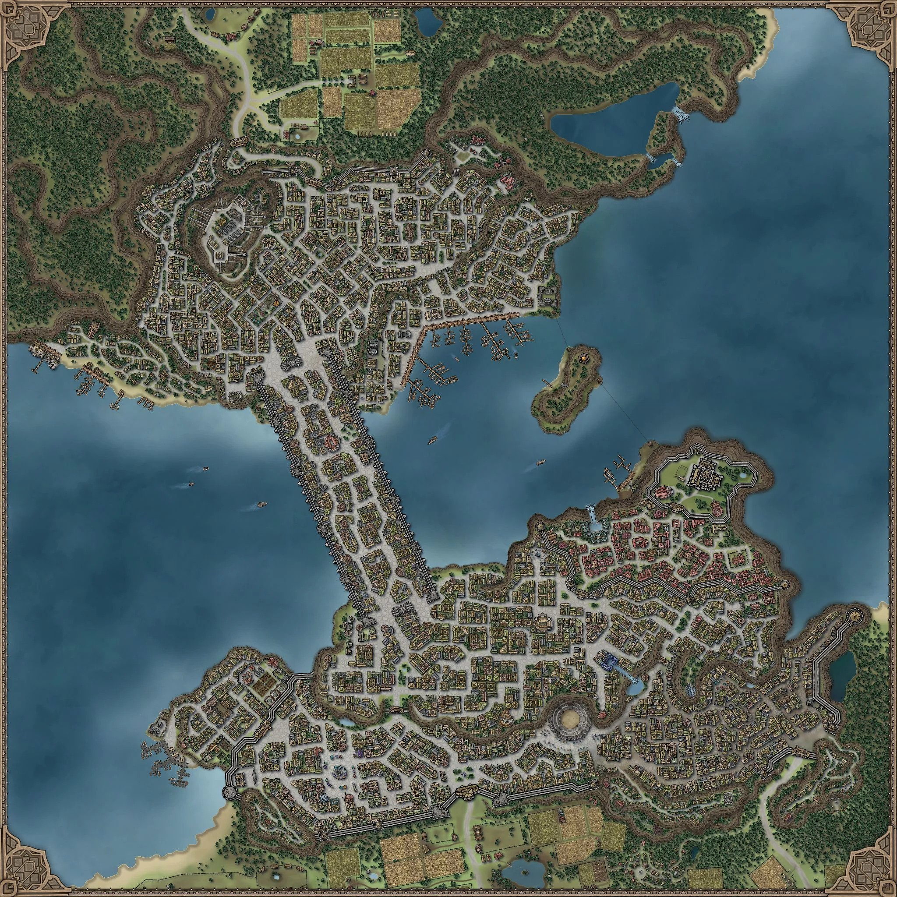<h1>Cerillanes</h1><h2>The Beacon of the North under the Seh'Dera Parish</h2><br><strong>Population: ~6,000</strong><br><i>Main Exports: Fish, Dyes, Furs</i><br><p>The third of the six ports of Seh'Dera, Cerillianes was established to supplement the need for trade via boat to the capital of Barely. Cerillianes quickly grew in population, as tradesmen from jewlers to lumber mills rapidly flocked to the new city, so much so that the city outgrew its walls. In 1094 A.E. the Starspark Bridge began construction, connecting the two banks of the city, and in 1100 P.D.E., the bridge finished. It's massive width, about 400 feet across, allowed not only the easy traversal to the other bank, but homes soon began construction on the bridge itself.</p>") ;
    
var ex_112 = L.marker ([-52.321911, -9.052734], {icon: mnvillage}).bindPopup("Lyrieis") ;
var ex_113 = L.marker ([-48.618385, -5.559082], {icon: mnvillage}).bindPopup("Macheonhau") ;
    
var ex_114 = L.marker ([-50.694718, 1.713867], {icon: mnvillage}).bindPopup("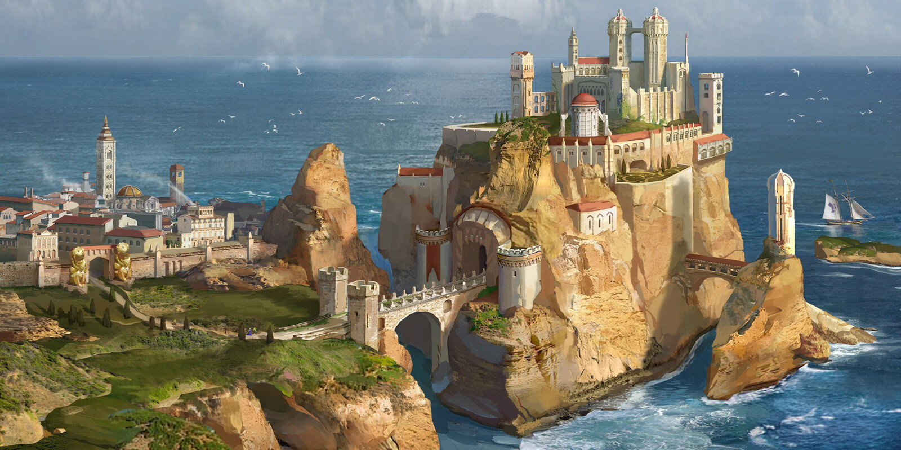<h1>Neralen</h1><h2>The Fortress on the Rock under the Seh'Dera Parish</h2><br><strong>Population: ~6,000</strong><br><i>Main Exports: Soldiers (Navy), Weapons, Armor</i><br><p>The sixth of the six ports of Seh'Dera, Neralen is mainly known for its castle that can only be accessed via a brdige that spans over a narrow pass. The city resides on the mainland of Mendon and is typically home to many soldiers of the Mendonese navy as the city serves as the main training hub for these forces.</p>") ;
    
var ex_115 = L.marker ([-54.673831, 5.800781], {icon: ruin}).bindPopup("Eska") ;
    
var ex_210 = L.marker ([-62.471724, 5.537109], {icon: lnforest}).bindPopup("<h1>The Dreadwood</h1> A snow-covered pine forest regardless of season, filled with abominations and twisted undead due to a resident lich. The occasional blizzard and 'Dread Curse' make the wood, ruins, and crumbled buildings within nearly inhospitible for long periods of time.") ;    
    
var ex_116 = L.marker ([-62.000905, 3.999023], {icon: ruin}).bindPopup("<h1>Forelea</h1><br><p>A once blossoming city that lays a few miles from the Gras Zordak, was turned to all but ruins after a maddened necromancer attempted to resurrect a dead deity in 1110 B.D.E. The land laid empty and  guarded along the forest the city resided in until 1138 P.D.E. when a curse slowly grew from the city into the surrounding forest, blanketing the surrounding area in snow and occasional blizzards, regardless of season.</p>") ;
		
		
		// Da'rwik
		
var ex_117 = L.marker ([-39.639538, 38.496094], {icon: lnmountain}).bindPopup("<h1>The Blessed Sextuplets</h1><p>Six peaks rise out of the ground like sentinels that overlook the ocean waters below. The orcs of Da'rwik believe the Sextuplets represent the two gods, three demi-gods, and one for all the deities. Because of this, pilgrimage to the Sextuplets is a common occurrence when asking for favors to the deities. The animals that live in the Sextuplets are considered sacred to the Da'rwikians and are protected by the few that live near the jagged peaks. Steep cliffs, narrow trails, and strong winds make for a dangerous climb to the top of any of the peaks, but those that are brave enough are granted with an astounding view and a chance to connect with the divine.</p>") ;
    
var ex_118 = L.marker ([-66.124962, 20.566406], {icon: lnlake}).bindPopup("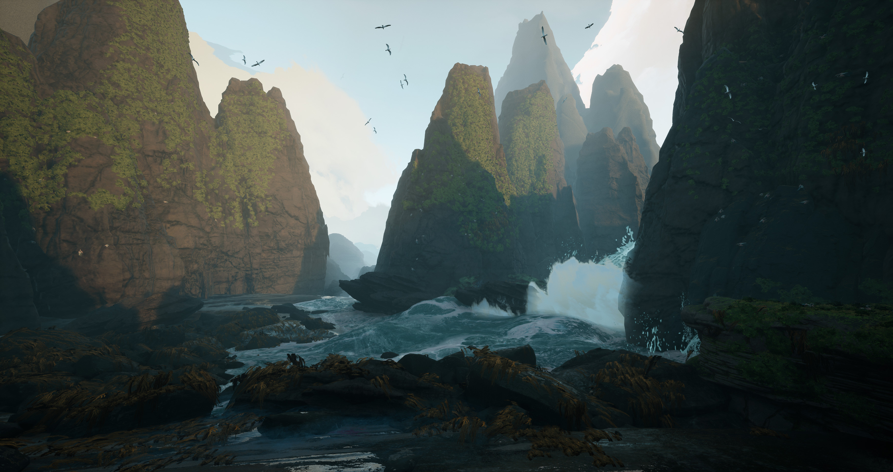<h1>Strait of Umberlee</h1><p>The murky shallow waters of the Strait of Umberlee punish ships like no other. The narrow waterway that separates the Mendonese and the Da'rwikians once full of water in centuries past became nearly dry during the creation of Gras Zordak. Strong currents and hidden sandbars that can easily catch unsuspecting ships off guard line the strait named after Umberlee, the dead deity of the Sea. Said to hold the remnants of the soul of Umberlee, those who dare to brave its waters must be careful and resourceful, for the strait is a fickle mistress, quick to reward or punish those who cross her path on their way to the capital city of Listern.</p>") ;
    
var ex_119 = L.marker ([-63.782486, 27.949219], {icon: lnlake}).bindPopup("<h1>Gulch of Hope</h1><p>A mysterious inland lake that has no source of replenishment, yet remains full under overhangs of red, yellow and orange sedimentary rock. The Gulch of Hope's mystery remains unsolved as this seemingly endless supply of water continues to fill until it is evaporated away by the heat and mid-day starlight. Some believe that the gulch is connected to an underground river , while others believe it was a gift from Seretra, the Lifemother, herself.</p>") ;
    
var ex_120 = L.marker ([-63.312683, 18.457031], {icon: drcapital}).bindPopup("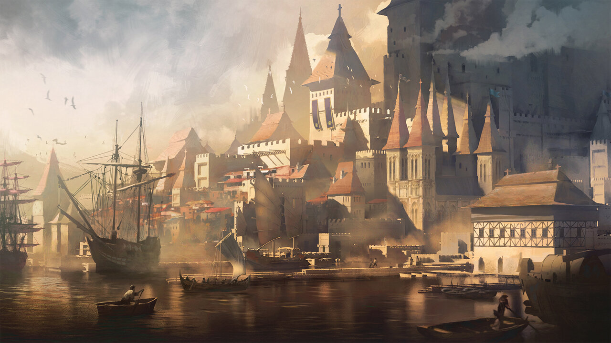<h1>Listern</h1><h2>'The Glass Oasis' - 'Capital' of Da'rwik</h2><br><strong>Population: ~11,000 & Steady</strong><br><em>Main Export: Clay, Metal, Stone</em><br><p>Four massive glass-claw structures protrude over and curve above the capital city of Da'rwik. These claws sing much like those found in the Glass Desert, resonating a whistling note over the entire port city. Despite its nickname, Listern's streets are packed full of orcs, half-orcs, and sparce humans. The city feels open because of doorways and walkways that are almost double the size of those found in cities made for non-orcs, giving the impression of space where nearly none can be found between shops selling wares to traders from far away countries.</p>") ;
    
var ex_121 = L.marker ([-61.354614, 20.478516], {icon: drcity}).bindPopup("<h1>Qel'Idd</h1><h2>Borehole in the Glass Desert</h2><br><strong>Population: ~4,000 & Steady</strong><br><em>Main Export: Clay, Metal, Stone</em><br><p>Deep underneath an open circular hole that provides little sunlight, lays the borehole city of Qel'idd. It's expansive ravines and shafts make for the second largest borehole settlement in Da'rwik. At the center of the borehole a little under 1000 feet down is the Qel Oshyu (Qel Mountain). A massive hall dedicated to knowledge and justice, doubling as both a library and a court of law. Expanding out from the 'Qel Mountain' are stone homes towered many stories high with intermittent trading spots and stores shoved in tight alleyways only accentuated by the size of the inhabitants. Bright murals, exotic goods, bustling taverns, and lively people make Qel'idd an adventuring destination to see how society evolves to survive, even in the harshest of conditions.</p>") ;
    
var ex_122 = L.marker ([-54.572062, 21.796875], {icon: drvillage}).bindPopup("Azdugh") ;
var ex_123 = L.marker ([-55.354135, 28.916016], {icon: drtown}).bindPopup("Krozdar") ;
var ex_124 = L.marker ([-61.354614, 46.582031], {icon: drtown}).bindPopup("Verez") ;
var ex_125 = L.marker ([-60.780619, 61.479492], {icon: drtown}).bindPopup("Zertalak") ;
    
var ex_140 = L.marker ([-58.950008, 24.257813], {icon: lndesert}).bindPopup("<h1>The Glass Desert</h1><p>Known as 'Adar Kor Kar' in orcish, the Glass Desert engulfs nearly all the landmass that Da'rwik claims. Its harsh climate makes for a formidable foe with wind speeds strong enough to take an orc off their feet. The desert gets its name from the 'glass' claw-like structures that poke out of the sand. Some emerge from the sand and tower the surrounding desert at 120 feet high, though most are closer to the ground at around 30-50 feet tall. Through years of erosion, these glass claws have many holes in them, ranging in size, and when the winds are strong and pass through the holes, it creates a melodic whistling noise. The orcs of Da'rwik call this 'Uldrae Kor Mub' or the Voices From Above, as they believe that certain tones indicate rain or drought, war or peace, birth or death, etc.</p>") ;    
		
		// Dwarvish
		
var ex_126 = L.marker ([-61.100789, -77.695313], {icon: arcity}).bindPopup("<h1>Karngrem</h1><h2>Dwarvish Settlement in the Western Knives</h2><strong>Population: ~3,500</strong><p>Karngrem is unlike other dwarvish settlements in the Western Knives and instead takes inspiration from the dwarvish towns in the Eastern Blades, laying between peaks in a snowy plain.Both hill and mountain dwarves reside within the city's stone walls as the culture intertwines with hill dwarven markets and shops and mountain dwarf sturdy stone buildings and training grounds. The close-knit community favors trade and relations with non-dwarvish people and is generally the most welcoming and accommodating for the few adventurers that wish to climb the frosted peaks of the Western Knives.</p>") ;
    
var ex_127 = L.marker ([-58.401712, -82.177734], {icon: arcity}).bindPopup("Weshaple") ;
var ex_128 = L.marker ([-54.775346, -82.529297], {icon: arcity}).bindPopup("Dalbomer") ;
    
var ex_129 = L.marker ([-58.631217, -68.642578], {icon: arcity}).bindPopup("<h1>Shenk</h1><h2>Dwarvish Fortress in the Western Knives</h2><strong>Population: ~1,500</strong><p>Arrow slits, watchtowers, massive gates and lit braziers the size of dragons line the fortress walls of Shenk. A testament to the skill and ingenuity of dwarvish architecture, Shenk is a strong and formidable settlement that focuses on military might above all else. Every member of the community is expected to play a role in the defense of the settlement. From a young age, the dwarves of Shenk are trained in the arts of warfare and are expected to be ready to serve at any time on various patrol routes in the Western Knives. In the new age of collaboration between dwarvish settlements, Shenk is responsible for keeping trading paths clear of both monsters such as giants, trolls, rocs, yetis, etc. and natural blockages like snow and boulders.</p>") ;

var ex_130 = L.marker ([-55.37911, -60.380859], {icon: arcity}).bindPopup("<h1>Hog Moren</h1><h2>Dwarvish City in the Western Knives</h2><p>A place where goliaths and dwarves live in harmony, Hog Moren is a place with a sense of community that is almost as strong as its residents. Despite its location in the jagged Western Knives, the mountain city thrives on the appetites of food, weaponry, gems, and stone seemingly unquenchable by its inhabitants.</p>") ;
    
var ex_131 = L.marker ([-56.607885, -44.121094], {icon: midstone}).bindPopup("<h1>Midstone Monastery</h1><br><p>What used to be the epicenter of the Cult of the Wood in the early 1100s has been restored to its former glory as a Monastery in a gulch surrounded by mountains. Monks of all types study their traditions and arts in the repurposed stone castle.</p>") ;
    
var ex_132 = L.marker ([-59.333189, -42.84668], {icon: arcity}).bindPopup("<h1>Hammerforge</h1><h2>Dwarvish Fortress & Mine in Knifesong Canyon</h2><br><strong>Population: ~4,000</strong><br><i>Main Exports: Weapons, Stone, & Armor</i><br><p>The Mountain Dwarf settlement of Hammerforge is quite the opposite from its neighbor Vor'dun. Built deep into the mountainous side of the canyon, the only piece of the town that stands out from the mountain is the main entrance to the city. Taking up nearly the entirety of the mountain from top to bottom it is encased in, Hammerforge is known mostly for its weapons and armor production, as well as being the birth place of the dwarven folding spear at the hands of Dwarven Warmaster Tasras Ironfist. The city itself comprises the entire mountain with one expansive mine underneath nearly reaching the Underdark. Because of this, Hammerforge has had issues with the Drow in the past, though they have negotiated an era of peace with losses mounting on either side over the past few centuries.  </p>") ;
    
var ex_133 = L.marker ([-59.95501, -38.540039], {icon: arcity}).bindPopup("<h1>Vor'Dun</h1><h2>Dwarvish Fortress & Mine in Knifesong Canyon</h2><br><strong>Population: ~4,000</strong><br><i>Main Exports: Ale and Weapons</i><br><p>The fortress of Vor’dun was a sprawling Hill Dwarven town with a scarce Mountain Dwarf presence. Known mainly for its export of specialty Dwarvish ale. A common destination for adventurers looking to climb the Eastern Knives into Mendon and the Ekdrald, the city gates were always open to new groups. Though the city was destroyed by forces connected to the Cult of the Wood in 1119 B.D.E., the city is undergoing a massive rebuilding project to return to its former glory.</p>") ;
    
var ex_134 = L.marker ([-64.453849, -30.498047], {icon: arcity}).bindPopup("<h1>Nah'Faldrin</h1><h2>Dwarvish Fortress & Mine in Knifesong Canyon</h2><br><strong>Population: ~8,000</strong><br><i>Main Exports: Precious Gems, Armor and Weapons</i><br><p>Underneath what looks to be a small hill dwarf encampment against the eastern range of Knifesong canyon sits a deep secret. A large cavern system, spanning the length of around 6 miles is home to the largest population of dwarves on the continent. The cavern known as Nah Faldrin, or its rough translation of 'Deep Darkhome' in common, subtly hides away around 7,000 mountain dwarves and 1,000 hill dwarves who guard the surface to protect their main source of income, precious gems from deep mining excavations. The cavern is comprised of four layers, two of them uninhabited, and the hill dwarven city on top.</p>") ;
    
var ex_135 = L.marker ([-53.618579, -40.297852], {icon: lnmountain}).bindPopup("<h1>Solice Pointe</h1>") ;
    
var ex_136 = L.marker ([-49.894634, -38.583984], {icon: lnmountain}).bindPopup("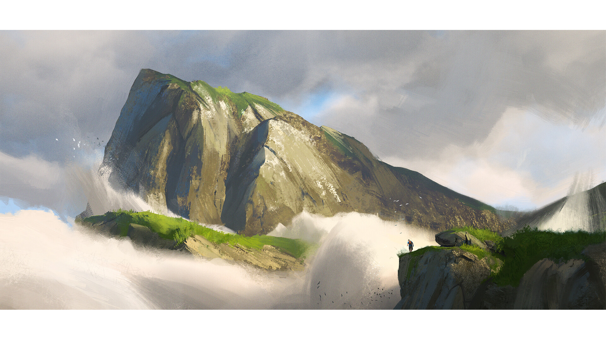<h1>The Deadclef</h1><p>This ~30 mile long cliff face separates the Republic of Volenia and Mendon making it nearly impossible to cross over. The Deadclef's nearly 800 foot drop at its highest point can grant astounding views of the two countries for those brave enough to trek up the Mendonese side of the range.</p>") ;
	
var ex_137 = L.marker ([-61.773123, -38.320312],{icon: lnvol}).bindPopup("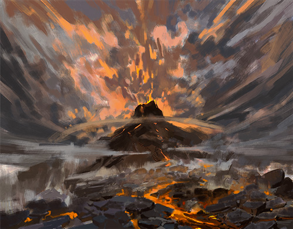<h1>Hell's Throat</h1><p>Standing at around 22,000 feet high, Hell's Throat is the tallest mountain within the Eastern Knives. This massive volcano, responsible for one of the calamities, is said to be connected to one of the nine layers of Hell, though it is not known which layer. Any attempts to study the now dormant volcano, typically spells demise for the scholars, as many expeditions have gone missing, yet to be found. The climb is treacherous at a near 60 degree incline, sudden rockfalls and flowing lava deterring even the most adventurous of groups from exploring the central vent.</p>") ;
	
var ex_138 = L.marker ([-31.428663, -90.527344], {icon: lnmountain}).bindPopup("<h1>Passes of Auril</h1><p>Two flowing periodic rivers known as the Passes of Auril or the Twin Passes, divide the NorThe only natural pathway through the towering Northern Spears, the Passes of Auril were once a heavily fortified choke point between the Colli Agreement and Volenia. During that era, battlements and watchtowers lined either side, standing as sentinels against the chaos of raiders. </br>With the rise of Taldiria and the establishment of diplomatic relations, the Passes of Auril have transformed from a battleground into a vital artery of trade. Two massive canyons carve their way through the mountains, diverging and reuniting as they stretch from Volenia into Taldiria. These paths are now well-traveled, hosting caravans of goods, traders, and emissaries who ensure the economic lifeline between the two nations remains unbroken.</p>") ;
    
    // C2 Icons
    
var ex_200 = L.marker ([-59.689926, -10.766602], {icon: downleft}).bindPopup("<h1>Session 20</h1> Arriving to Barley, the group is met by a drow Ambassador. He takes them through the east side of the city before turning the group loose, but not before mentioning the Estillo Ball happening the next day. However, as night fell, individuals attempted to assassinate the group, though their demise was swift, small tadpoles with a symbol burned into them scattered out of the dead bodies. After being escorted to Seretrina, the Arcane College, the group found sleep. <br><br> <h1>Session 21</h1> The Estillo Ball was in full swing when the group awoke, tons of wild animals roam the city streets with flowers exchanging hands more than coin. The Underdark denizens of the group recieved a blessing which turned them into their surface counterparts.") ;    
    
var ex_201 = L.marker ([-66.062633, -33.486328], {icon: downleft}).bindPopup("<h1>Session 12</h1> Dead End, finding their way to the surface from Gracklstugh, walked through Knifesong Canyon down to the small town of Clewich. Meeting surface dwellers, for most of  the group, for the first time. They opened the group with welcome arms, explaining that more and more Underdark dwellers have been stopping by on their way to start their new life.<br> <h1>Session 13</h1> Traveling through Easthaven to Strixhaven.") ;        
		
var ex_202 = L.marker ([-70.945356, -54.51416], {icon: left}).bindPopup("<h1>Session 13 cont.</h1> The group made a quick half-day stop in the trade city of Easthaven, buying wares and selling others on their way to Strixhaven.") ;  	
        
var ex_203 = L.marker ([-70.524897, -72.070313], {icon: downright}).bindPopup("<h1>Session 13 cont.</h1> Arriving to Strixhaven, the group entered through the gates to the demi-plane and were told there were a series of trials. <br> <h1>Session 14</h1> Dead End proved themselves in the first few trials. As the applicant number dwindled, the group was put into a 'Dive', a fantastical recreation of a scenario using magic. This went horribly wrong as one of the polyhedra used in the illusion was infected with what seemed to be the Demi-God of Death, Oxmes. They were granted admittance for their struggle. <br> <h1>Session 15</h1> Recovering from their entry tests, Dead End attended classes for about two weeks before Scaria was set to announce something large. This event drew most of the students from all around campus as the created life itself and immortalized it. Going against magic and nature itself, a riot started leading to Dead End being in a prison cell in Whitebridge the next day.") ;
    
var ex_204 = L.marker ([-73.15044, -64.291992], {icon: downleft}).bindPopup("<h1>Session 15 cont.</h1> Quickly breaking out of the prision cell with the help of an unknown Magocracy Official, Dead End fled to Cliffport in the dead of night and caught a boat to Altash, the captial of Volenia.") ;  
    
var ex_205 = L.marker ([-28.88316, -54.997559], {icon: down}).bindPopup("<h1>Session 16 </h1> Arriving in Altash after nearly two weeks of sailing, solid ground came underneath Dead End's feet. The group met a few important individuals; T<em>he Duke of Town Affairs - Bryan Mandel, Overseer of International Affairs - Wyndham Olvostien, and the Grand Protector of the Republic - Tasha</em>. Treating themselves to coffee before Tasha informed the group they had a property for them in return for a few small favors along the way. <br><br> The group fought off ghosts and claimed the property for their own. <br> <h1>Session 17</h1> <em>one month downtime...</em> Settling into their new home, Dead End had renovated their newfound home to be a brothel and a place to stay for themselves. Though they lacked personnel. The group sought out competitors and stole two sex workers from another brothel, and eventually purchased slaves at the auction (Volenia being the only nation that has legal slaves and sex work). Though in the days between, Tasha would approach Dead End for a favor; Executing the Mage of Border Defense of the Ekdrald.") ; 
    
var ex_206 = L.marker ([-31.672083, -54.162598], {icon: upleft}).bindPopup("<h1>Session 18</h1> Concocting a plan, the mage and their guardsmen were killed in less than a minute and the group returned to Altash successfully.") ; 

var ex_207 = L.marker ([-29.707139, -54.997559], {icon: upright}).bindPopup("<h1>Session 18 cont.</h1> Less than two days later, the Anti-Arcania Association (an anti-mage group believed to be responsible for the murder of the mage) was bombarded with fireballs from a secretive organization known as 'The Wings', an Ekdraldian military group of Sphinx Riders. <br> <h1>Session 19</h1> Dead End is approached once again by Tasha, who is hysterical about pushing these two countries to the brink of war. She requests the group goes to Barley, the capital of the High-Elvish country of Mendon, to ask for aid and assistance. She will pay and sends Wyndham Olvostien (Overseer of National Intelligence) and Nathalia Altbright as a envoy.") ;
    
var ex_208 = L.marker ([-59.866883, -12.194824], {icon: right}).bindPopup("<h1>Session 22</h1> The second half of the Estillo Ball begins, from literal mountains of food being conjured to a ritualistic sacrifice of 8 people. Dead End found themselves talking to nobles in an attempt to gain support for their (Volenia's) cause. Meeting the king and queen of the country, the master of the arcane academy, and many more. <br> <h1>Session 23</h1> Three worlds collided as Dead End spoke to the various friends they made during the festival. However, the entire country seems to have their eyes on the Rings of the Prime, which a few parties have their hands on, even though they aren't supposed to. Eliphra Cerrint, the former noble ruler's daughter, is keeping one on her finger. As well as one ring that has mysteriously disappeared. <br> <h1>Session 24</h1> Infiltrating the Cerrint Family Mansion, the one of the Rings of the Prime was found and returned to the Kelrans as the Cerrint Mansion burned down with yet another member of the Cerrint family desceased by her own hands.") ;
    
var ex_209 = L.marker ([-60.930432, -1.582031], {icon: downright}).bindPopup("<h1>Session 25</h1> With Sarin leaving Dead End Behind, the group leaves eastward from Barley on the whim of a Sea Elf Ranger they met who is attempting to find a lich known as 'The Stitcher' in an forest known as 'The Dreadwood'.") ; 
    
var ex_211 = L.marker ([-62.052437, 4.96582], {icon: downright}).bindPopup("<h1>Session 26</h1> Dead End, reaching a break in the treeline that leaves life behind, continued into the Dreadwood. The temperature dropping rapidly before snow overtook the ruined road leading into the Lich controlled area. Meeting Equern Arvan, the head of the North Post and helping the little of what's left of the Dread Watch.") ;     

var ex_212 = L.marker ([-62.734601, 5.712891], {icon: right}).bindPopup("<h1>Session 27</h1> Continuing further into the Dreadwood, Dead End happened upon the Cultivation, what used to be known as the Braern Winery, finding the last remaining noble of the Braern family. Dead End killed him.<br><h1>Session 28</h1><p>Setting the Braern Winery ablaze, Dead End pushed deeper on a mission to reclaim the South Post, discovering a dwarf druid, Lodam, who aided the party in clearing the first few rooms of a dungeon underneath the South Post.</p> ") ; 
    
var ex_213 = L.marker ([-62.754726, 7.097168], {icon: upright}).bindPopup("<h1>Session 29</h1> Dead End retook the South Post for the Dreadwatch after a fearsome battle in the sepulcer of the fort. Going farther East to House Meerin, discovering a child along the way, the party was greeted and escorted into the mansion/fortress of the last remaining noble family in the region.</p> <h1>Session 30</h1><p> The child, as the group would come to know, was infected with something. As the party tried to exercise the curse, it seemed to only make things worse. After spilling live blood oozes from his mouth, the child fled the fortress and his destruction was stopped only by that of the Stitcher. The group shortly after, left the fortress after not dying by the hands of the lich, meeting a dryad named Radya along the way and connecting her with her tree back in the Feywild. Though the group was unable to teleport her back.</p>") ;  

var ex_214 = L.marker ([-62.329208, 7.734375], {icon: left}).bindPopup("<h1>Session 31</h1><p>Learning of a weapon that could kill The Stitcher, Dead End continued to a ruined temple to Seretra. Finding <strong>Sagruith</strong>, a weapon forged many years ago but containing a soul of an Arch-Druid to Seretra who sacraficed himself after killing most of the other clergy members at the temple after they dealt with 'dark magic'. Upon leaving the temple's underground, a blizzard roared, imparing vision for most except that of a few undead and an undead black dragon. <h1>Session 32</h1> The dragon was banished only for a minute as Dead End escaped into the blizzard and headed west towards the abandoned city of Forelea. Upon reaching the city, Dead End climbed to the city's once mighty castle and were forced to fight vampire spawn and a vampire who, when killed, dropped a similar tadpole as the one found in Mendon. The vampire reincarnated from mist and thanked the group, calling herself Arabelle Von Zarovich.</p>") ;
    
var ex_215 = L.marker ([-62.186014, 6.657715], {icon: left}).bindPopup("<h1>Session 33</h1><p>Arabelle called upon arcane forces to contact her father, Strahd Von Zarovich, who took her away, but promised that if Dead End could ever make it to his castle in the Shadowfell, they would be welcome. Upon leaving the castle of Forelea however, Radya (the dryad) fell to the floor in pain as a portal opened up and a ovular black diamond came from within. Vines began to grow, and instead of grabbing Elgin, instead the vines grabbed Liara, dragging her into the portal to the unkown. The group continued their search of Forelea without Liara, finding a necromancer's home, walls stained red from blood, and body parts laid out along the floor. Upstairs, a spellbook that read a sinister passage.<br></br>The group traveled to where the violin playing was coming from since they entered the city to find three individuals, a half-orc Korog, a gnome Nilroe, and some unknown creature Varis. Together them and Dead End continuted out to the ruins once again, and along the way, fought and killed the undead black dragon.</p><h1>Session 34</h1><p>Defeating the undead black dragon, the Stitcher appeared, angered that the group had killed her prized creation. A massive battle ensued which left Nilroe and Korog most likely transforming into undead, and Eren Nakamura of Dead End, disintegrated.") ;

var ex_216 = L.marker ([-62.206512, 6.04248], {icon: up}).bindPopup("<h1>Session 35</h1><p>Running away from the fight with the Stitcher, Dead End made their way into a cave. Upon descending into the cave, the group encountered a Greater Basilisk and its two children. Though they snuk past the creatures, they then encountered a silver dragon who was polymorphed into an older human. Gaula vowed to help Dead End, and pointed them in the direction of the rest of the cave which housed flumphs, a mindwitness, and a colony of Myconids at odds with Vegepigmys.") ;
    
var ex_217 = L.marker ([-61.731526, 6.04248], {icon: upleft}).bindPopup("<h1>Session 36 & 37</h1><p>The fight against the Stitcher came to a full head as Dead End made their way to where they started, the North Post. Rallying with the Volenian soldier reinforcements, a plan was set into motion. Gunfire, necromancy, undead, and much more ensued as the force of military members cleared a path for Dead End to reach Zyretrina and eventually put an end to the Stitcher's reign, and the Dreadwood as a whole. <b>Back to Altash</b>.") ;

var ex_218 = L.marker ([-29.439598, -54.206543], {icon: downright}).bindPopup("<h1>Session 37 cont.</h1><p>Dead End returned back home to their business and the few friends they have made. Already prepping for another adventure. <h1>Session 38</h1><p>Taking a much needed rest, Dead End watched over the Pink Swallow and went about other business for 4 weeks over the month of Erra.</p>") ;    

var ex_219 = L.marker ([-31.615966, -52.998047], {icon: down}).bindPopup("<h1>Session 38 cont.</h1><p>Hearing word of a Fey carnival known as 'the Menagerie', Dead End decided to trek just outside Altash, in hopes that the group could access a portal to find a few lost friends.</p><h1>Session 39</h1><p>Continuing to search for the Feywild portal within the carnival, the group stumbled onto a digruntled individual named Ur'edar who was coincedentally looking for the same portal. As the festivites pressed on, Ur'edar and two members of Dead End would find themselves conversing with the carnival's owners, pleading for access to the Feywild portal. For a price of Ure'dar's ability to smile, the group was shown the portal and went through.</p>") ;

var ex_220 = L.marker ([-48.777913, -51.020508], {icon: up}).bindPopup("<h1>Session 39 cont.</h1><h2><em>in the Feywild...</em></h2><p>Traveling to the Feywild, the group traversed the Murkridden, an expansive swamp. Rallying with hobgoblins and eventually a trapped faerie dragon pleading for help. Dead End was quickly encircled by quicklings and a hag.</p>") ;

var ex_221 = L.marker ([-44.668653, -51.240234], {icon: up}).bindPopup("<h1>Session 40</h1><h2><em>in the Feywild...</em></h2><p>The hag quickly used a dwarf under her control to take the faerie dragon while the group was encased in magical darkness. Few attacks were made and the quicklings all ran away, though not before trying to rob the party of their shiny things. Dead End continued trudging through the Murkridden, encountering a moving inn with small chicken legs run by an old human woman named Tsu. They stayed overnight and the inn dropped them off on another side of a large pond. With a city, Si'Nelci, 'the City of Teeth', on the mind, the group headed 'northward', only to be encountered by a group of Harengon bandits.</p> ") ;   
    
var ex_222 = L.marker ([-42.924252, -50.603027], {icon: up}).bindPopup("<h1>Session 41</h1><h2><em>in the Feywild...</em></h2><p>Finding Si'Nelci, a city made of bone, Dead End had a few teeth extracted to pay for interesting fey items. Though they prodded their way into the home of an Arch-fey known as the 'Tooth Fairy'.</p><h1>Session 42</h1><h2><em>In the Feywild...</em></h2><p>The Tooth Fairy proved a worthy ally as she has lost her kingdom to the hags that ruled over Si'Nelci. Aiding her, Dead End stole a guards armor and stormed the castle, fighting off the three hags and the dwarf that they had taken control over. But not before a vampire paid a visit, the father of a member of Dead End.</p>") ;    
    
var ex_223 = L.marker ([-29.954935, -56.162109], {icon: here}).bindPopup("<h1>Session 41 cont.</h1><p>Dead End teleported back to relative saftey within the walls of their home of Altash. They recounted their short Fey adventure to many and made plans to eliminate the vampire, Cardinal Crane, in order to aid the 'war' effort against the Ekdraldian Nation of Cities.</p>") ;   

// Campaign 2 markers

var ex_224 = L.marker ([-70.94536, -53.39355], {icon: downleft}).bindPopup("<h1>Session 1</h1><p>Beginning in the trade city of Easthaven, the unnamed group of adventurers received a contract to deliver four heavy crates to the capital city of the Ekdraldian Nation of Cities, Whitebridge. The group traveled West into the Wreathing Woods.</p>") ; 

var ex_225 = L.marker ([-71.60135, -61.56738], {icon: downleft}).bindPopup("<h1>Session 2</h1><p>Continuing towards Whitebridge, the group discovered an old religious site, dedicated to Dizzirun, The Great Brain. After delving into an old sacrificial area, the group found an old Tortle, Kokee, who they took under their wing.</p>") ; 

var ex_226 = L.marker ([-73.08663, -63.67676], {icon: upright}).bindPopup("<h1>Session 3</h1><p>Eventually entering Whitebridge, the group attempted to drop off their cargo, though the Bank Overseer of Whitebridge, Askhad Ashbrace, turned the cargo away and asked for the group to drop the contents at his estate late into the night. </br></br> Obliging, the group entered the Estate after the stars set, though after what seemed to be a smooth drop off, Askhad erupted into a fireball, killing him and knocking over 75,000 gold pieces worth of fake coin onto the front lawn of the estate.</p><h1>Session 4</h1><p>The unnamed group of adventurers defended the Askhad estate from assassins of Dark Elf (Drow) descent, eventually making their way inside with Askhad's late wife. Investigating Askhad's study revealed correspondence between the now dead Magocracy official and 'Kyvir,' an unknown individual, though it would seem a plot to disrupt the Ekdraldian economy is afoot.</p><h1>Session 5</h1><p>Being acquitted of <em>most</em> of the suspicion surrounding the murder of Askhad, the group turned over evidence to a Magocracy judge. Upon a closer inspection of Askhad's study, a hampster was discovered, seemingly able to read and write. After the night's events, some went to enjoy a drink while others broke into the Academy of War Casters' library, stealing a book on fleshwarping at the hampsters request. Meanwhile, one of the group members comitted murder in the backalley of a student of the same college.</p>") ; 

var ex_227 = L.marker ([-72.29575, -59.47998], {icon: upright}).bindPopup("<h1>Session 6</h1><p>Late into the night, holed up in a dusty rented room, the group's newly found wizard-turned-hampster attempted a ritual, spawning a Yochlol (servitor of Lolth, the Spider Queen), who taunted the unnamed heroes but quickly dismissed itsself. <br>Sleeping off the misadventures and crimes from the previous day and early morning, the group made a stop at the Comb & Collar pet store before deciding to leave Whitebridge for Clewich, in search of an old family cabin. <br>As they passed through the Wreathing Woods, a well-traveled shapeshifter let the group sleep at her camp. While seeming mostly harmless despite the deception of appearance, the group invited her along on their journey.</p>") ; 

var ex_228	 = L.marker ([-66.02695, -34.25537], {icon: here}).bindPopup("<h1>Session 7</h1><p>The group continued towards Clewich through the Bellimore Thicket, eventually reaching small township. Introductions to local townsfolk uncovered recent nightmares due to what is believed to be a haunting at an old, broken windmill.</p>") ; 
   
		//Marker Groups
		
    var mg_Cities = L.layerGroup([ex_13,ex_14,ex_15,ex_16,ex_17,ex_18,ex_19,ex_20,ex_21,ex_28,ex_29,ex_30,ex_31,ex_32,ex_33,ex_34,ex_35,ex_36,ex_37,ex_38,ex_39,ex_40,ex_41,ex_51,ex_54,ex_55,ex_56,ex_57,ex_58,ex_59,ex_60,ex_61,ex_62,ex_63,ex_64,ex_65,ex_66,ex_67,ex_68,ex_69,ex_70,ex_71,ex_72,ex_78, ex_82,ex_83,ex_84,ex_85,ex_86,ex_87,ex_88,ex_89, ex_100,ex_101,ex_102,ex_103,ex_104,ex_105,ex_106,ex_107,ex_108,ex_109,ex_110,ex_111,ex_112,ex_113,ex_114, ex_120,ex_121,ex_122,ex_123,ex_124,ex_125, ex_126,ex_127,ex_128,ex_129,ex_130,ex_131,ex_132,ex_133,ex_134]);
		
	var mg_Regions = L.layerGroup([ex_1, ex_2, ex_3, ex_4, ex_5, ex_6, ex_7, ex_8, ex_9, ex_10, ex_11, ex_12, ex_42, ex_43, ex_44, ex_45, ex_46, ex_47, ex_48, ex_49, ex_50, ex_73, ex_74, ex_75, ex_76, ex_77, ex_80, ex_81, ex_90, ex_91, ex_93,ex_94,ex_95,ex_96,ex_97,ex_98,ex_99, ex_117, ex_118, ex_119, ex_135,ex_136,ex_137,ex_138, ex_140, ex_210]);
		
	var mg_Ruins = L.layerGroup([ex_22, ex_23, ex_24, ex_25, ex_26, ex_52, ex_92, ex_115, ex_116]);
    
    var mg_States = L.layerGroup([polygon, polygon2, polygon3, polygon4, polygon5]);
    
    var mg_camp = L.layerGroup([polylineFW, polyline, ex_200, ex_201, ex_202, ex_203, ex_204, ex_205, ex_206, ex_207, ex_208, ex_209, ex_211, ex_212, ex_213, ex_214, ex_215, ex_216, ex_217, ex_218, ex_219, ex_220, ex_221, ex_222, ex_223]);

    var mg_camp1 = L.layerGroup([polylineCamp2, ex_224, ex_225, ex_226, ex_227, ex_228]);
	
		//Marker Overlay
	
    var overlays = {
        "Cities" : mg_Cities,
        "Regions" : mg_Regions,
		"Ruins" : mg_Ruins,
        "States" : mg_States,
		"C2: Dead End" : mg_camp,
		"C3: No Name" : mg_camp1,
    };
		
	var overlays1 = {
		"Ruins" : mg_Ruins,
		
	};
		
	//GROUP CONTROLS
    L.control.layers(null,overlays, overlays1).addTo(map);

    </script>
</body>
</html>